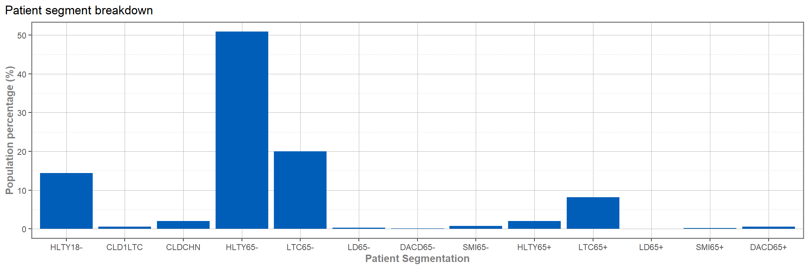
Executive Summary
North West London (NWL) has a young and relatively healthy population, but significant inequalities exist across ethnicity, gender, age, and deprivation. This report aims to understand the variation in need and unmet need in NWL, in order to highlight priority areas for NWL and influence planning.
Key Insights
- Children: Gaps in vaccination, obesity, dental health, and mental health support.
- Adults: Challenges with cancer screening, obesity, sexual health, severe mental health, depression, and anxiety.
- Older Adults: High service demand from hypertension, diabetes, obesity, stroke mortality, and falls.
Cross-Cutting Priorities
- Mental Health:
- 30% higher rates of Mental Health Act detentions than England, especially among Black communities, men, and 18–34s.
- Severe Mental Illness (SMI) patients rely heavily on A&E and acute care, highlighting poor access to early support.
- Stigma and low trust reduce service use, particularly for older adults.
- 30% higher rates of Mental Health Act detentions than England, especially among Black communities, men, and 18–34s.
- Cardio-Renal Metabolic Conditions:
- Hypertension, diabetes, and obesity drive major health burdens.
- Obesity is increasing among both children and adults, with higher rates in deprived, Black, and Asian groups.
- These conditions fuel inequalities and worsen long-term outcomes.
- Hypertension, diabetes, and obesity drive major health burdens.
Inequalities in Care
- Health outcomes and service use vary sharply by deprivation and ethnicity, with higher emergency use, alcohol misuse, and diabetes in these groups.
- Patients report barriers such as poor communication, lack of cultural sensitivity, and low trust in NHS services.
- Spending is highest in deprived, reflecting later, more expensive interventions.
Implications for NWL ICB
- Prioritise mental health, obesity, hypertension, and diabetes.
- Embed equity and cultural competence into service design.
- Improve access, communication, and trust, especially for deprived and minority communities.
- Shift from reactive care to prevention, especially for healthy populations.
Introduction
This report is designed to aid understanding of the health needs of the population interacting with North West London (NWL) ICS. By building a clearer picture of these needs, priorities can be sharpened at ICB level to ultimately deliver more targeted, effective care for the people of NWL.
The table below illiterates the relationship between risk factors and outcomes, all of which are explored in the report below.
| Distal risk factors (‘Causes of the causes’) | Behavioural risk factors | Person level outcomes | Population level outcomes |
|---|---|---|---|
| Socio-economic factors Physical environment Ethnicity Gender Healthcare access |
Smoking Alcohol Physical inactivity Health seeking behaviours |
LTCs eg. cancer, diabetes, COPD Poor maternity outcomes eg. still birth Adverse health events eg. A fall in a frail person, being subject to the mental health act, A&E attendance |
Life expectancy Premature mortality Healthy life expectancy |
To further understand the relationship between the distal risk factor and behavioural risk factors, access to healthcare and health outcomes, the report examines these metrics by deprivation levels, gender and ethnicity, with the undertsanding that the inequalities between these groups are largely preventable or modifiable. Whole population segments are used to explore the relationship between population levels of need and service usage and health outcomes.
Who are the people living in North West London
The people registered in the North West London Integrated Care Board (NWL ICB) area represent a wide range of cultural, ethnic, and socio-economic backgrounds. The area includes eight boroughs Brent, Ealing, Harrow, Hillingdon, Hammersmith and Fulham, Kensington and Chelsea, Westminster, and Hounslow—each with its own unique communities.
Breaking the population into smaller groups helps the ICB better understand and address health needs by recognizing that different groups experience varying levels of risk, access and outcomes. By dividing the population based on factors such as age, socioeconomic status, ethnicity, geography, or specific health conditions, we can identify patterns in disease prevalence, access to care, and service usage. This enables more targeted interventions, efficient resource allocation, and tailored strategies, ultimately improving health equity and ensuring that services meet the needs of communities rather than applying a one-size-fits-all approach.
In this report we look at the population by gender, deprivation, ethnicity and whole population segments. The NWL whole population segments comprise of 13 segments that captures distinct health requirements. They are designed to ensure that the groups were both familiar and pragmatic so that they would be easy to use in the actual context of North West London and to make it easy for professionals to work together.
The table below outlines the whole population segments, each segment definition and data inclusion,
| Segment title | Group code | Description of group |
|---|---|---|
| Mostly health children | HLTY18- | People under 18 that are mostly healthy and do not fit into any other group |
| Children with 1 or more long term conditions | CLD1LTC | People aged under 18 that have one or more long-term conditions1, e.g. asthma, diabetes, and not in another group. Includes common mental illnesses, e.g. depression, anxiety, and long term neurological conditions |
| Children with complex health needs | CLDCHN | People aged under 18 diagnosed with complex health needs, significant community (not GP) involvement, a MH inpatient stay, or a variety of outpatient appointments. Includes a variety of defined diagnoses, LTCs. |
| Mostly healthy adults <65 | HLTY65- | People between 18 and 64 that are mostly healthy and do not fit into any other group |
| Adults (18-64) with one or more long term condition | LTC65- | People aged between 18-64 that have one or more long-term conditions2, e.g. asthma, diabetes. Includes common mental illnesses, e.g. depression, anxiety, and long term neurological conditions |
| Adults with dementias, Alzheimer’s and/or cognitive decline | DACD65- | People aged 18-64 who have cognitive decline resulting from a medical disease rather than a psychiatric illness, including dementia as well as other conditions such as Huntington’s and Parkinson’s disease |
| Adults with learning disabilities | LD65- | People aged between 18 and 64 who have a difficulty learning in a typical manner that affects academic, language and speech skills (excludes mild conditions that do not have an impact on social relationships or work) |
| Adults with severe and enduring mental illness | SMI65- | People aged between 18 – 64 that have a mental health problem (typically people with schizophrenia or severe affective disorder) that experience a substantial disability as a result of their mental health problems |
| Mostly healthy elderly (>65) people | HLTY65+ | People who are 65+ that are mostly healthy and do not fit into any other group |
| Elderly (>=65) with one or more LTCs | LTC65+ | People who are 65+ that have one or more long-term conditions2, e.g. asthma, diabetes. Includes common mental illnesses, e.g. depression, anxiety, and long term neurological conditions |
| Elderly people with dementias, Alzheimer’s and/or cognitive decline | DACD65+ | People who are 65+ who have cognitive decline resulting from a medical disease rather than a psychiatric illness, including dementia as well as other conditions such as Huntington’s and Parkinson’s disease |
| Elderly people with severe & enduring mental illness | LD65+ | People who are 65+ that have a mental health problem (typically people with schizophrenia or severe affective disorder) that experience a substantial disability as a result of their mental health problems |
| Elderly people with learning disabilities | SMI65+ | People who are 65+ who have a difficulty learning in a typical manner that affects academic, language and speech skills (excludes mild conditions that do not have an impact on social relationships or work |
The majority (>50%) of the NWL population is made up of healthy adults under 65, followed by adults (18-65) with 1 or more long term conditions. Despite the other population groups making up a smaller proportion of the population our more complex groups have a big impact on services as we will see below.
Overall, NWL has a young population compared to the national average, especially in central boroughs, where there are high numbers of working-age adults and young professionals. Boroughs such as Harrow, Hillingdon, and Ealing have growing older populations, with a notable proportion of residents aged 65 and over. At the same time, many NWL boroughs also have a high proportion of children and young people, particularly in Brent and Hounslow, reflecting family-oriented communities.
Ealing residents make up the largest share of the North West London ICB population, followed by Brent. A smaller proportion of registered patients live outside the eight NWL boroughs, most commonly in neighboring areas such as Barnet, Camden, Richmond upon Thames, and Wandsworth.
Many residents are from Black and Asian ethnic backgrounds, and a significant proportion speak languages other than English at home, most commonly Arabic, Punjabi and Gujarati. The population includes both affluent neighborhoods and areas facing high levels of deprivation, resulting in varied health and social care needs. This diversity presents both challenges and opportunities for delivering equitable, inclusive, and culturally sensitive healthcare across the region.
GP records indicate that English is the main language for only 36% of the population, with Arabic, Punjabi, and Gujarati being the most common languages after English. However, around a third of the GP language data is missing from the GP record and the ONS reports that between 69-79% of people have their main language as English in NWL. This still much lower than the national average of 91%.
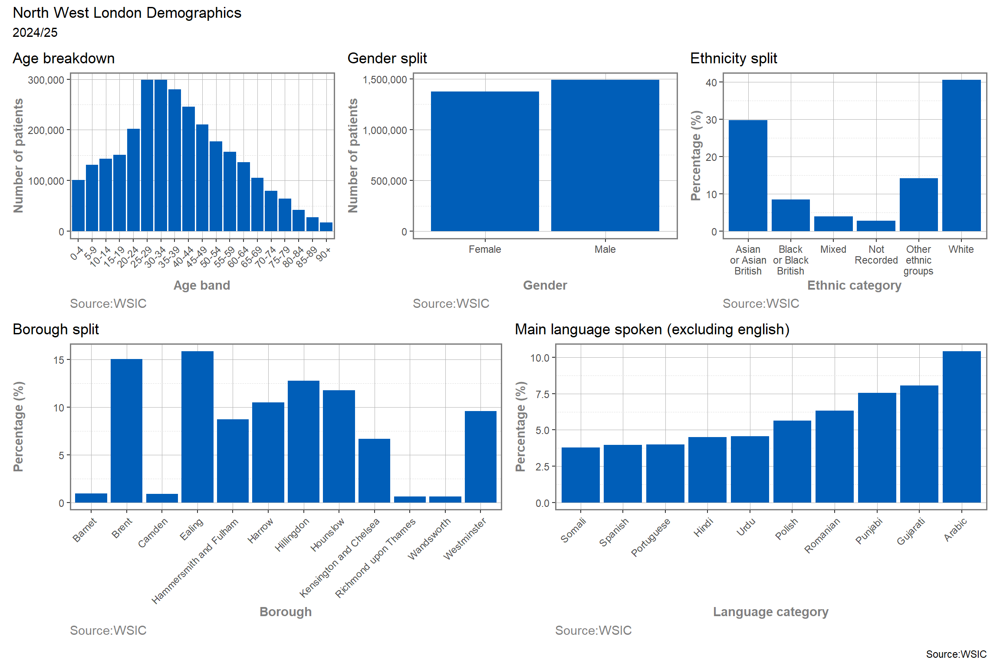
Health Status in North West London
Life expectancy in North West London is still recovering from the impact of COVID-19, while healthy life expectancy has remained relatively stable. There is significant variation across the region. Communities experiencing higher levels of deprivation tend to have both lower life expectancy and lower healthy life expectancy. As a result, people in these areas are likely to spend a greater proportion of their lives in poor health. However, the gap in overall life expectancy hasn’t always fallen to the same extent as healthy life expectancy. That means they often spend more years in poor health compared with those in more affluent areas ONS, 2022.
Life expectancy
The difference in life expectancy between boroughs has fluctuated over time, however, Kensington and Chelsea, Westminster and Harrow have had a higher life expectancy over the last 20 years compared to the other boroughs and life expectancy in Hammersmith an Fulham has remained lower.
Preventable mortality is significantly lower that the national average in all boroughs apart from Hammersmith and Fulham OHID, 2023
TO DO - revisit why there are gaps in the map
Healthy life expectancy
Overall, NWL has a healthier population that the England average, with less people with long term condtions (LTCs) and Complex health needs. However, if we look across the different age segments; the over 65 population in NWL has higher rate of people with Complex health needs compared to the England average. Furthermore, the Asian and Black populations have a lesser percentage of healthy people compared to the national average for these ethnicities. On the other hand, the most deprived (Core 20) group has a higher percentage of its population who are healthy compared to the Core 20 nationally.NHSE- PaPI Dashboard, 2024
The health equity program aims to increase healthy life expectancy for all its residents and reduce the gap in healthy life expectancy between the most and least deprived populations.
The percentage of the population with 2+ LTCs is a measure of ill-health and therefore healthy life expectancy. The graph below displays the percentage of the population with 2+ LTCs by age and deprivation quintile. The graph demonstrates how the more deprived quintiles (1 +2) develop multi-morbidity earlier than the less deprived populations (4+5). The most deprived community known as the Core 20 population (quintile 1) reports 50% of its population being multi-morbid at age 56, whereas the least deprived community (quintile 5) reports this statistic at age 65. This is a 9 year difference.
We also see this gap in health life expectancy in our ethnic groups; the age in which 50% of the Black population is morbidity is 46, Asian is 48, Mixed is 50 and White and Other is 55. The rate of increase of multi-morbidity varies by age and ethnicity, particularly in the younger age groups. For example, the White, Black and Mixed ethnic groups start increasing in multi-morbidity at aged 18 whereas the Asian group doesn’t see a significant increase until after 25. The rate of increases in the White population then plateaus from about 25-40 whereas the other ethnicities see a steady increase in these ages. This suggests that different ethnicities have different experiences of health outcomes especially under the age of 40.
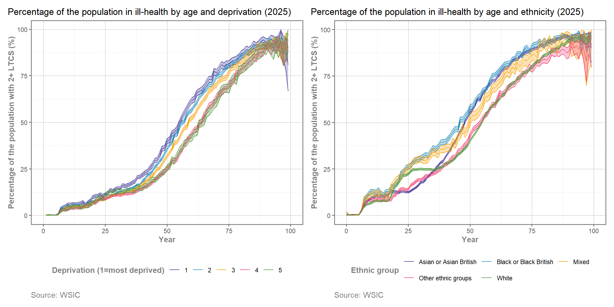
The map below shows the average age at which 50% of the population at each geography has 2+ LTCs. There is a similar geographic distribution compared to life expectancy, both these maps can help identify which neighborhoods have the greatest healthcare need. When looking at the averages for each MSOA (~5,000-15,000 people), healthy life expectancy ranges from 59 to 85 in NWL.
Impact on the health service
The graph below illustrates how both age and patient needs influence levels of unplanned healthcare activity. As individuals develop long-term conditions (LTCs), their likelihood of requiring urgent or emergency care increases, placing greater demand on NHS services. Keeping the population healthier for longer — particularly by preventing or delaying the onset of long-term conditions — can significantly reduce the overall need for unplanned care. Moreover, slowing the progression of individuals from lower-need groups (those with no or a single LTC) into more complex groups, such as those living with dementia or severe mental illness, can ease pressure on the system. This idea aligns with a population health management perspective, focusing on prevention, early intervention, and tailored care to improve outcomes while ensuring the sustainability of resources.
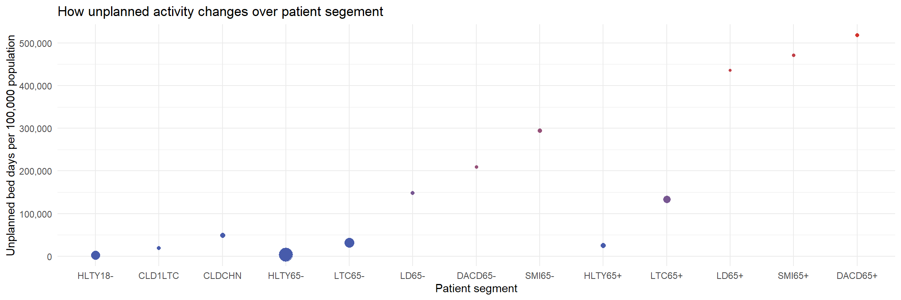
What influences a persons health
Health outcomes are shaped by a complex interaction of factors, with social and economic circumstances exerting the greatest influence (around 40%), followed by health behaviors such as diet, physical activity, and smoking (30%). Health services account for approximately 20% of overall health impact, while the physical environment contributes around 10%. This distribution aligns with the evidence on the wider determinants of health, as described in the Marmot Review and subsequent analyses by The King’s Fund. Recognising these proportions highlights the need for a population health approach that goes beyond clinical care to address the social, economic, and behavioral factors that drive health inequalities and influence long‑term outcomes.

Health Behaviours
Health behaviors play a crucial role in shaping health outcomes; by making conscious, positive choices in daily life, people can significantly reduce health risks, manage conditions more effectively, and improve both their lifespan and quality of life. This report looks into negative health behaviors such as, smoking, alcohol misuse and physical inactivity and positive health behaviors, cancer screening, blood pressure checks, STI testing and vaccination.
Overall, North West London has high rates in detrimental health behaviors compared to England with the exception of smoking. North West London performs the most poorly in admissions for alcohol specific conditions, STI test positivity and bowel screening. There is established trend between deprivation and detrimental health behaviors, from the data available the largest inequality is seen in alcohol admissions followed by smoking and physical inactivity. Based off these data point address alcohol misuse is a key issue in North West London.
Deprivation data not available for STI testing, and MMR vaccination
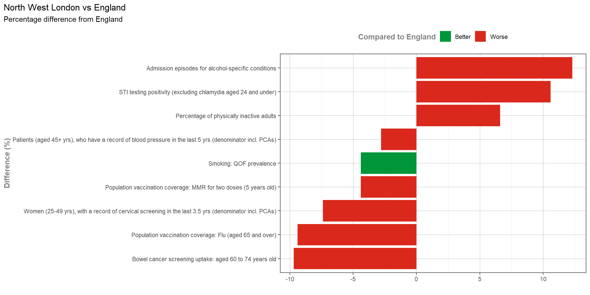

Smoking is a major health behavior that strongly affects health outcomes. It damages the lungs and blood vessels, greatly increasing the risk of diseases such as lung cancer, heart disease, and stroke. Quitting smoking, on the other hand, quickly improves health by lowering these risks and enhancing overall well-being.
Smoking prevalence has been decreasing the NWL over the last five years, however it is an area with a high degree of inequity. Groups with higher rates of smoking that could be reviewed for further targeting are those in the most deprived areas, Black and Black British, males, and those with severe mental health, particularly people with SMI under 65.
Patient Insights
- Smoking rates are very high among people with SMI, yet it seems to be rarely addressed in mental health treatment plans.
- Children in complex families are frequently exposed to smoking at home, with suggested little evidence of targeted public health messaging.
- People with LTCs face high relapse risks, often linked to pain, stress, or lack of ongoing cessation support.
- Some in the healthy population feel stigmatised about smoking and avoid seeking help to quit.
- People with LD may not always be aware of the health risks of smoking or where to get support.
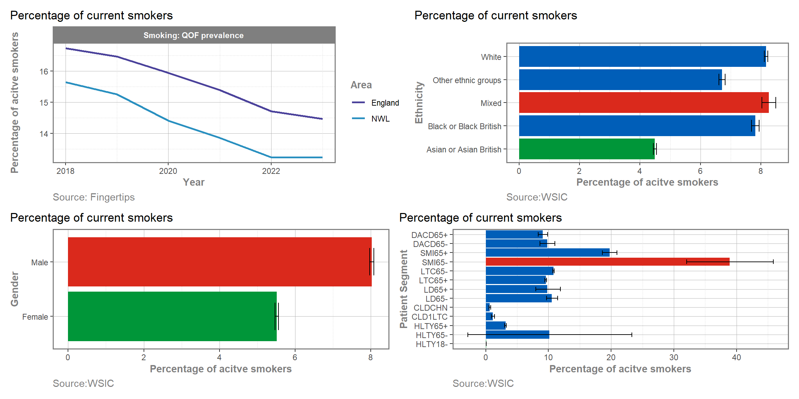
Regular physical activity is a key health behavior that greatly improves health outcomes. It helps prevent chronic diseases such as heart disease, diabetes, and obesity, while also boosting mental well-being and quality of life. In contrast, a lack of physical activity increases the risk of poor health and early mortality.
Physical inactivity as remained stable over the last five years, however it is an area with a high degree of inequity. Groups with higher rates of physical inactivity that could be reviewed for further targeting are those in the most deprived areas, Asian and Asian British, females, and those with learning disability, particularly those over 65.
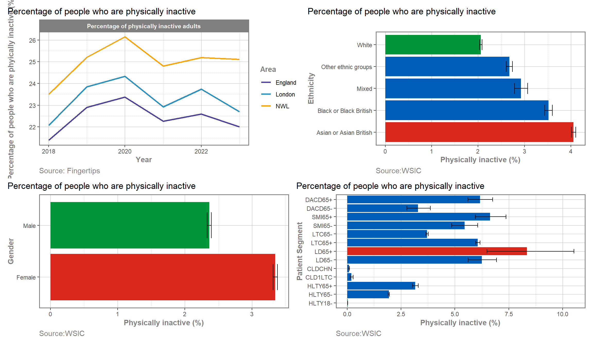
Practicing safe sexual health behaviors, such as using protection and getting regular screenings, reduces the risk of sexually transmitted infections and unplanned pregnancies. Positive sexual health practices also support overall well-being, healthy relationships, and reproductive health.
In the last NWL STI test positivity has increase above London, this suggests NWL is not performing enough tests compared the need created by the true prevalence of sexual health disease.
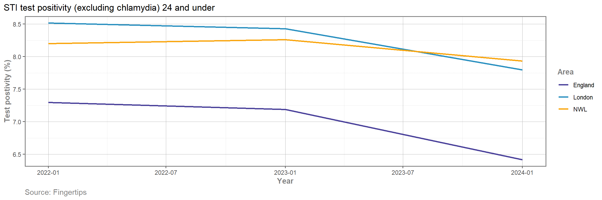
Alcohol admissions have increased over the last three years in NWL, a trend that is not seen nationally or in London. Alcohol admissions report the highest degree of inequity in deprivation, gender and ethnicity. Those who are most affected are the those in the most deprived group, White ethnic group, males and people with severe mental health, particulary those over 65.
Patient Insights
- Some people with LTCs use alcohol to cope with pain, isolation, or emotional distress.
- In people with early-stage dementia, alcohol misuse may go unnoticed or be attributed to other symptoms.
- Some people with SMI use alcohol to self-manage symptoms or emotional discomfort.
- Concerns have been raised about parental alcohol use in families with children who have complex needs.
- Alcohol misuse in the healthy population is rarely acknowledged or discussed openly.
- Among people with LD, alcohol use may go undetected due to difficulties in communication and lack of routine screening.
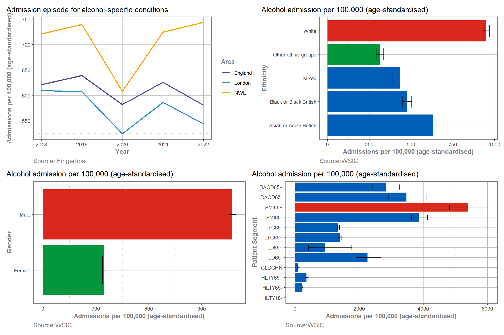
Vaccination is a critical health behavior that protects individuals and communities from infectious diseases. Staying up to date with recommended vaccines lowers the risk of severe illness, prevents outbreaks, and promotes long-term public health. The needs assessments focus on two prominent vaccinations, MMR and Influenza.
MMR is given to children under 5 which protects against measles, mumps and rubella. There has been a constant decline in childhood vaccines over the last decade UKHSA, 2023 and both London and NWL are below the national average. However as of 2022/23, North West London is performing better than the London average. Data for North West London inequalities is unavailble for the report, however nationally MMR vaccine uptake is lower in the most deprived regions OHID, 2022/23. Furthermore, children born to mothers in minority ethnic groups had lower vaccination coverage and inequities have been seen to widen over the between 2006 and 2021 particularly in Caribbean, Other Black and African and Caribbean groups, Lancet, 2023
Influenza vaccinations are primarily given to those aged 65+ to reduce the transmission and severity of flu, the predominant winter virus in the UK. As of 2023/24, NWL has the worst vaccination coverage for flu in England at 64.4% OHID, 2023/24. Those in more deprived area, females, Black or Black British are all groups that could be targeted to improved uptake. Equally, those in the Healthy 65+ group have much lower coverage compared to the rest of the 65+ group.
NB: WSIC data underestimates flu vaccine coverage compared to OHID source
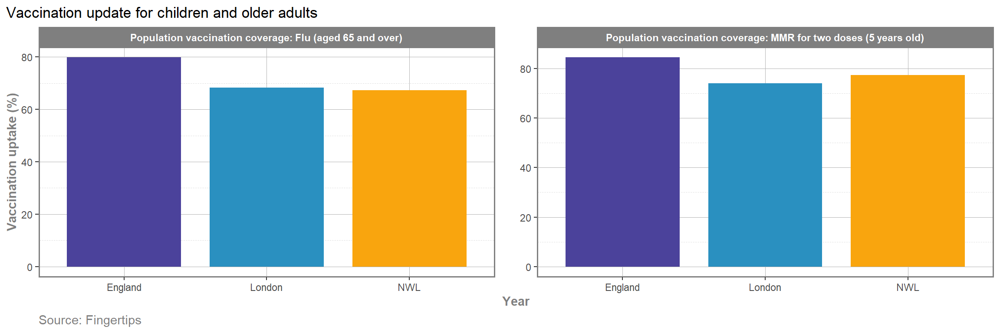
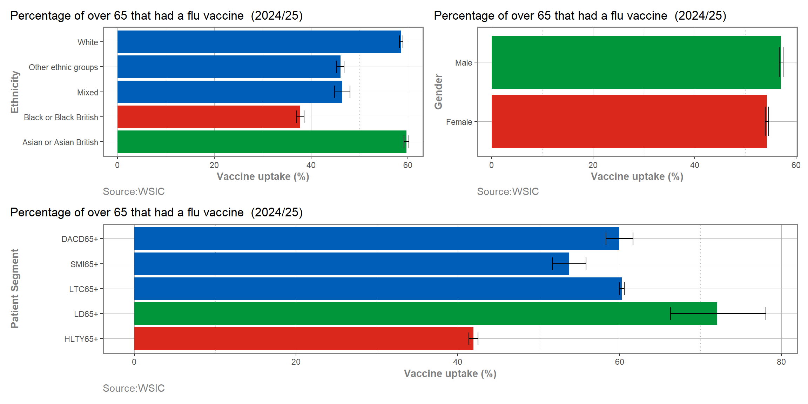
Cancer screening and blood pressure (BP) checks are important because they help detect problems early, often before symptoms appear. Early detection of cancer or high blood pressure can lead to quicker treatment, better outcomes, and reduced risk of serious complications. Regular checks also give people peace of mind and encourage healthier lifestyle choices.
Bowel screening has increased over the last five years, however North West London remains far below the National average and below comparable ICB, Greater Manchester. NWL has the worst uptake of screening for both bowel and cervical cancer.
NWL had a lower rate on urgent suspected cancer referrals to the national average, which may be reflective of the poor screening uptake. However, there is also a low percentage of the urgent referrals that result in cancer diagnosis suggesting, that either the referrals are targeting the wrong people and these people are being diagnosed elsewhere or the rate of referrals is suitable for the true prevalence of cancer in NWL OHID, 2024. Futhermore, data from the National Disease Registration Service suggests that NWL has a higher incidence of diagnosis through A&E, meaning that people may not be accessing the right services.
Patient Insights
- Some healthy individuals do not engage with preventative care, due to other commitments
- It appears that some healthy individuals have undiagnosed high blood pressure, particularly where community health check uptake is low.
- People with dementia and LD often miss cancer screening invitations or struggle to understand their purpose.
- People with SMI may avoid cancer screening due to anxiety, mistrust, or negative past experiences.
- Some in the healthy population delay seeking help due to unawareness of early cancer symptoms.
- Among people with LTCs, cancer is sometimes discovered incidentally during routine or unrelated care
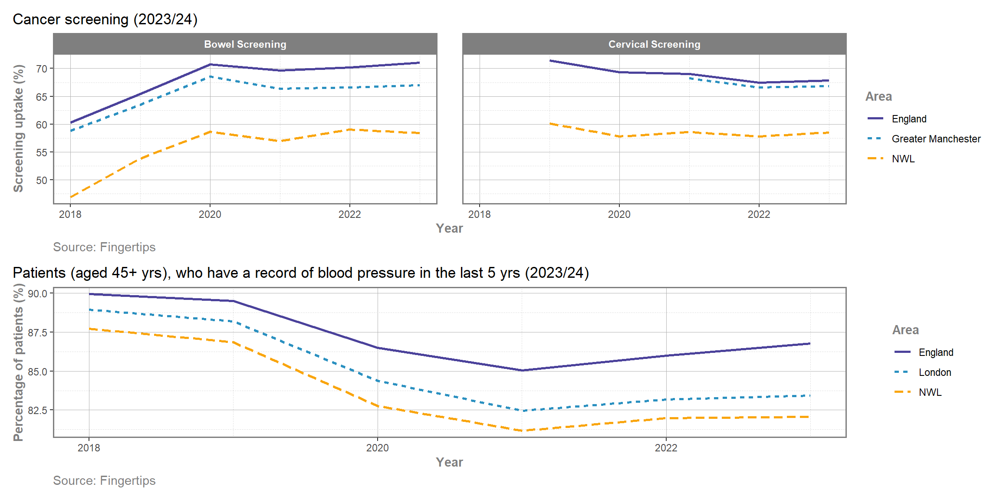
Bowel screening has the highest inequality between deprivation groups, meaning the most deprived group could be targeted for better uptake. Particularly those in the Healthy under 18-64 group, which also has a low uptake compared to the other whole population segments.
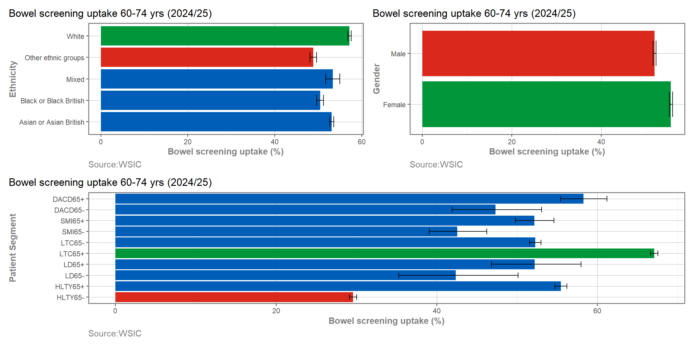
In cervical screening, the inequality is lesser between ethnic groups and deprived in compared to bowel screening. However, there is still poor uptake of cervical screening compared to other ICBs. Those in the other ethnic group and people with learning disability have the lowest uptake.
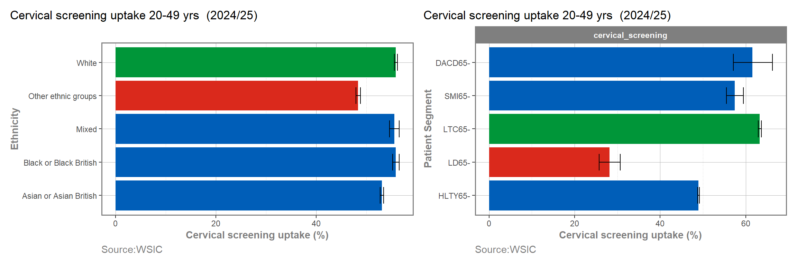
Blood pressure checks have lower uptake in the White and Other ethnic groups, as well as males and people who are healthy.
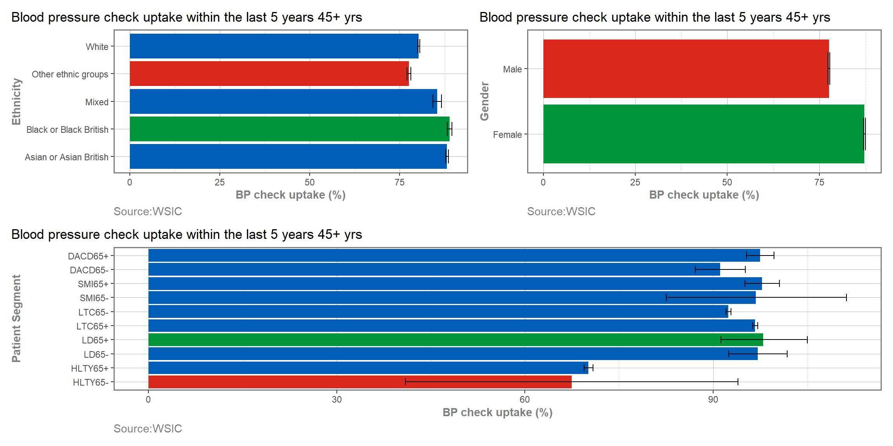
Health Service
Access to healthcare services strongly shapes health outcomes because timely, affordable, and appropriate care can prevent illnesses from worsening, support early diagnosis, and improve management of chronic conditions. When access is limited—whether due to cost, distance, long waiting times, or lack of culturally appropriate services—people are more likely to experience avoidable complications, poorer quality of life, and reduced life expectancy. Understanding activity rates can aid understanding of access to services; increased reactive emergency services usage can suggest poorer access to more preventative care. Comparing North West London (NWL) rates to national figures and to different segments within NWL helps identify pressure points within the system.
Secondary Care
The following data is from the NHS Model Hospital too, which provide benchmark insights across activity, quality and productive in care systems, with a focus on secondary care systems.
Key insights:
- Planned care in increasing but has not yet met still pre pandemic levels and outpatients appointment rate is significantly lower than lower than ICB piers
- NWL has lower rates of unplanned activity compared to national, however, inequalities in A&E admissions are the greatest compared to all other service activity.

North West London has had consistently lower rates of elective admissions compared to that national average (ccg median) however, it has begun to have higher rates than it’s peer ICBs (London ICBs), over the last year. Although rates have been rising since the pandemic the rates have not yet consistently reach pre-pandemic levels. This suggests that the ICB will need to keep increasing the planned care it provides to meet demand, assuming it is the same of more than the demand before the pandemic.

North West London has had consistently lower rates of elective bed days compared to that national average (ccg median) and it’s peer ICBs (London ICBs). Although the rate is increasing, it has not yet reached pre-pandemic levels. However, this could also be due to the number of bed day per elective admissions being reduced.

NWL has similar rates of outpatient appointments to the national average (ccg median), however it has much lower rates to it’s peers, suggesting there may be more outpatient appointments needed for the demographic of NWL.

North West London has lower rates of non-elective admissions compared to the national average (ccg median) and similar rates to the peer average. Rates have remained consistent over the last couple of years.

North West London has lower rates of non-elective bed days than both the national average (ccg median) and peer ICBs. This suggests North West London is better at reducing the length of stay for emergency admissions than its peers. However bed day rate is on an upward trajectory suggesting that something is affecting the length of stay for NWL patients.

North West London has lower rates of A&E attendances than both the national average (ccg median) and peer ICBs. This suggests North West London is better and reducing the utilisation of A&E services than its peers. The analysis below explores whether this is consistent across North West London.
Access
The management of waiting lists and access the planned hospital care is big challenge in the NHS. Delays to treatment can leave a patient with debilitation conditions for longer and their risk of the condition worsening increases with time. Analysis done by the Health Foundation showed there is inequality in the median wait times between ethnic and deprivation groups. It also reports the the people facing the highest levels of deprivation are more likley to need emergency care while waiting for elective care. However, in NWL the greatest gap in median wait time was between ethnic groups, with the White population waiting 65 days and the Asian population waiting 74.
It also showed that NWL has a much greatest wait time for specialties such as Neurology, Oral surgery, General surgery and Neurosurgery compared to Cheshire and Merseyside and West Yorkshire IBCs

Primary Care
The primary care activity data is published by NHS England and can be explore more in the GP Data Hub Dashboard.
The majority of GP appointments occur face to face, followed by telephone. North West London has higher rates of both these types of appointment compared to both London and England. This may explain some of the lower rates in non-elective activity.
When asked in the GP survey During your last appointment, how good was the healthcare professional at treating you with care and concern?, a lower percentage of the NWL population reported “Good” (83%) compared to the national average (86%). Performance then falls again in people who identify as gay or lesbian, younger age groups, people from the Core 20 and in Asian and Mixed ethnicity.GP survery, 2025,
Comparative analyses show that consultation quality, continuity of care, and satisfaction rates are lowest in general practices serving deprived populations. For example, continuity and time with a GP are significantly worse, and satisfaction with service access is lower among deprived groups Health Equity Evidence Centre, 2024
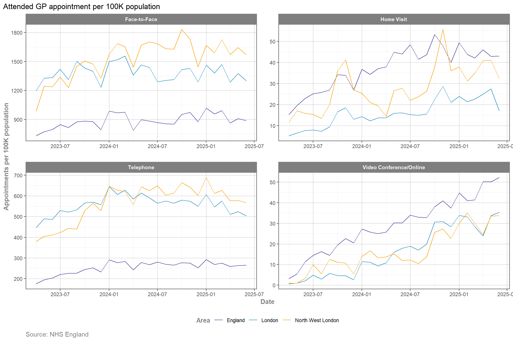
Segmention Insights
This activity data is from the Whole Systems Integrated Care (WSIC) data in North West London. This data is a powerful population health management resources as provides us with linked health data across all the sectors; mental health, community, primary care and secondary care. However, there are some data quality issues to be aware of:
- Community data - there is no data for Central London Community Healthcare NHS Trust (CLCH) and no data for West London Trust after 2019
- Mental Health data - there is not data from West London from 2020/21- 2021/22
Therefore we can assume a substaintial chunck of both the community and mental health data is missing. Although the the rate of activity will be lower than actual rates we can still examine trends in the data.
Looking at the activity breakdown by deprivation, ethnicity, whole population segments and gender can help us identify what characteristics might be driving higher rates of activity. Deprivation is a big driver of activity with all services having higher rates of activity in the most deprived groups compared to the most affluent groups. The Deprivation equity score for service activity graph displays which activity has the greatest variation driven by deprivation. The graphs shows that A&E has the greatest inequality followed by Mental Health service events. The ONS, 2023 found that difference is A&E attendances between deprived groups could be partially explained by difference in underlying health, however, even after adjusting of underlying health people in more deprived areas where more likely to attend A&E suggesting there are other contributing factors to this trend such as Primary Care access. Furthermore, despite activity in primary care being higher in the more deprived groups, spending is not substantially different by deprivation. This suggests either more deprived practices to more work for less money or that people from more deprived groups receive different less expensive care from more affluent groups. There is also a similar trend in community activity with a higher spend in the most affluent groups despite the lower activity rates. [Optum - TCoC, 2025]
Within between ethnic groups, A&E admissions also has the greatest inequality associated, due to much higher rates of activity in the Black population. This increased activity in the black population is also seen across all mental health service activity
The relative difference in activity between males and females in also in A&E where Females have higher rates of utilization. This may be a reflection on the longer life span of females, care needed during maternity and that females are more likely to seek medical care. Males have greater utlisation of mental health bed days and unplanned bed days, suggesting more severe outcomes when healthcare is sought. This trend is also refelcted in the spend per person between genders in the mental health care setting.
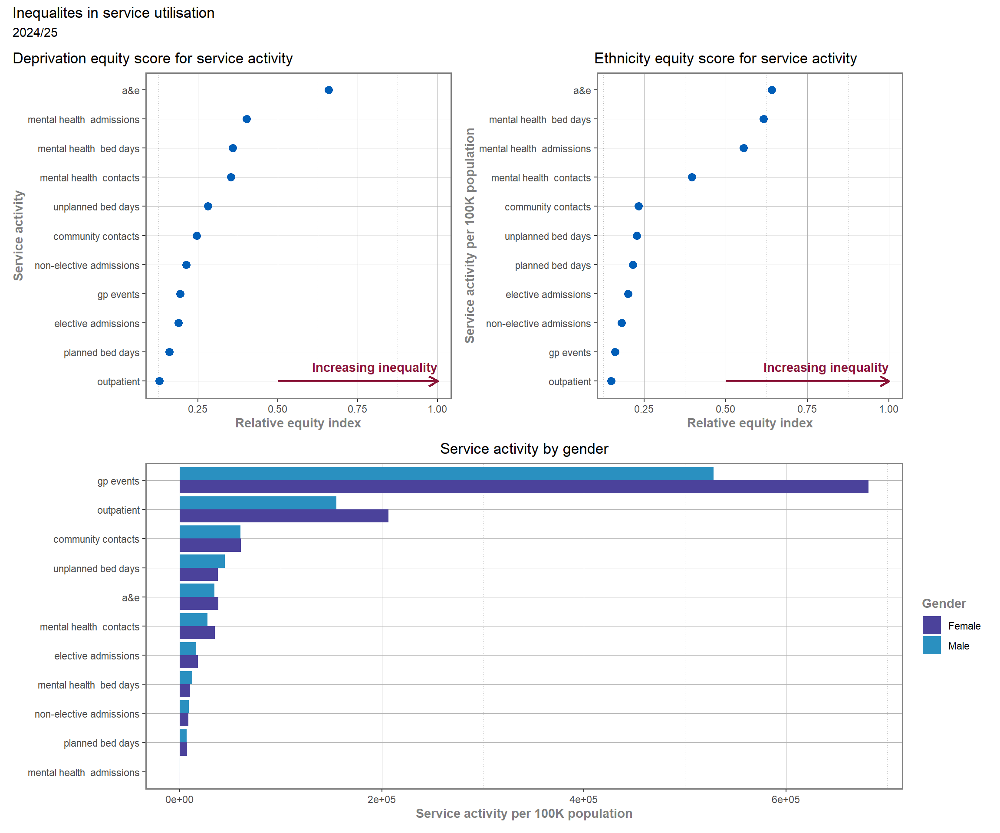
The table below shows the rate of each service by whole population segment. The older more complex patients, DACD, LD and SMI have high rates of service utilization across all service types, particularly reactive care. In planned care, the trend differs slightly, with SMI65- having the highest rates of outpatients and DACD65- have the highest rates of elective admissions. SMI patients, unsurprising have the highest rates of mental health service utilisation.
The SMI, DACD and LD groups are patients with known complexity, in order to reduce strain on emergency unplanned care, we need to better understand how we can support these patients with preventative care.
Patient Insights
- People with LD often excluded from planned care pathways, often rely on A&E.
- People with dementia miss follow-ups; carers manage navigation.
- Some people with 1 LTC suggest that feel unsupported between appointments.
- People with SMI are often re-engaged with services only during crises, leading to frequent use of emergency care instead of planned support.
- Complex children use A&E during crises due to lack of consistent care.
Which patient group uses which serivces
These graphs demonstrate the percentage of attendances, bed days and admissions that each patients segment contributes to, and compares this to the percentage of the population the segment makes up. This tells us when a patients segment contributes to more activity that expected and also shows for each service which segments makes up the majority of their patients.
Four groups have the greatest over representation of activity compared to their population size across all the services DACD65+, DACD65-, LD65+ and SMI65-. The DACD groups over represent in A&E, elective admissions, non-elective admissions and unplanned bed days. People with learning disability over 65 have a high rate of community contacts, GP appointments and planned bed days and people with SMI who are 18-65 have high rates of all mental health activity and outpatient appointments. Notably the 18-64 group has much higher rates of mental health activity that the 65+ group.
Other key insights :
- Healthy people under 18 make up a greater percentage of A&E attendances than their population share, this suggests a greater need in this population for emergency services.
- Healthy children make up a greater percentage of mental health contacts compared to healthy adults, despite being a much smaller proportion of the population
- People age 18-64 that are healthy or with 1+ LTCs make up over half of the A&E attendances
- 65+ with LTCs make up the majority of community contacts
- Adults with LTCs make up approximately 70% of all elective admissions, 60% of all non-elective admissions and 60% of GP events.
- The LTC65+ group makes up over 50% of all GP appointments alone
- People with SMI 18-64 make up over 60% of all mental health admissions and bed days
- People with LTCs 18-64 make up a greater percentage of mental health admissions compare to SMI65+
- There is less that a 5% difference between proportion of mental health contacts between those with SMI and LTCs in the 18-64s
- Over 65s with LTCs make up the majority of unplanned bed days. equally the rate of unplanned bed days in the Healthy 65+ population is over 6 times higher than the rate in Healthy 18-64 population.
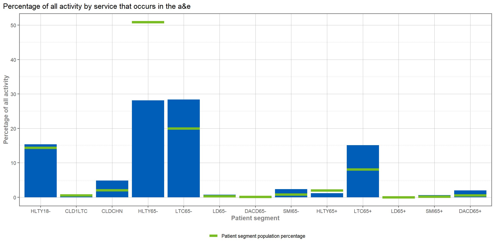
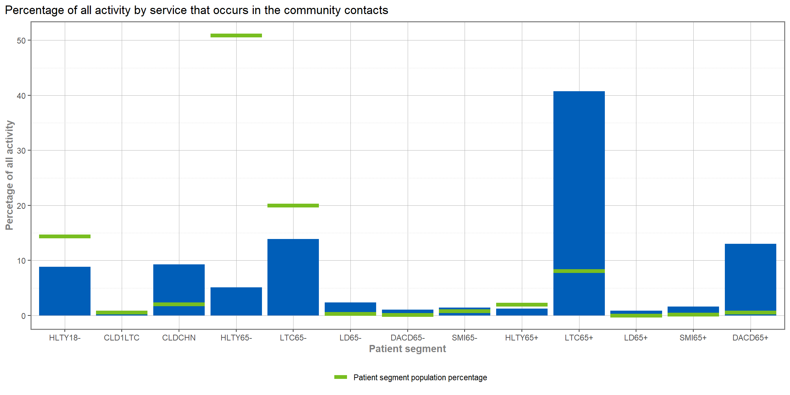
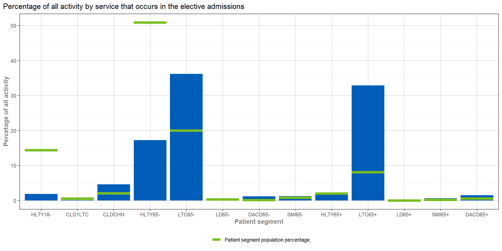
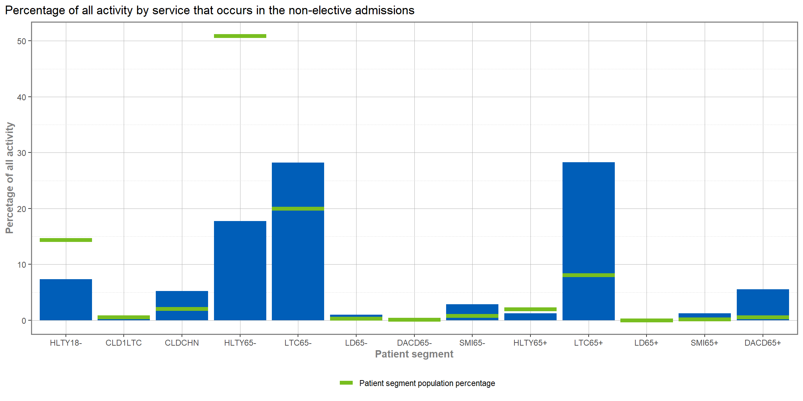
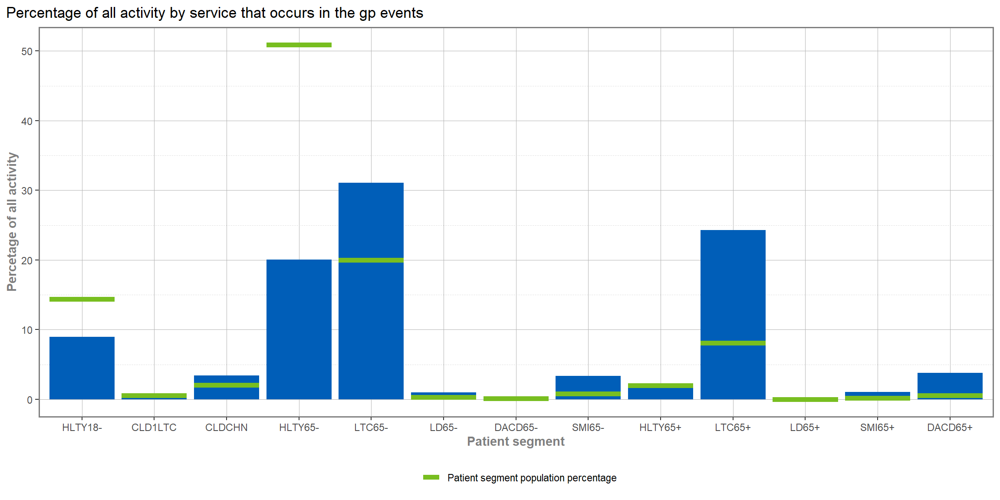
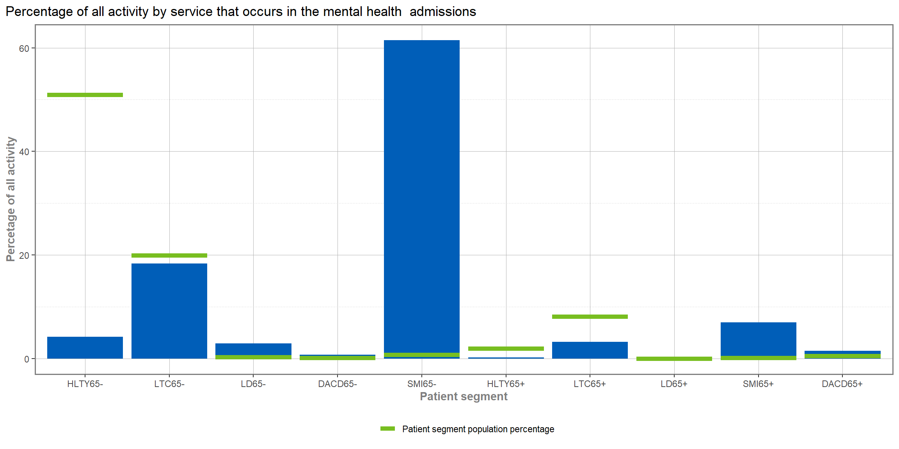
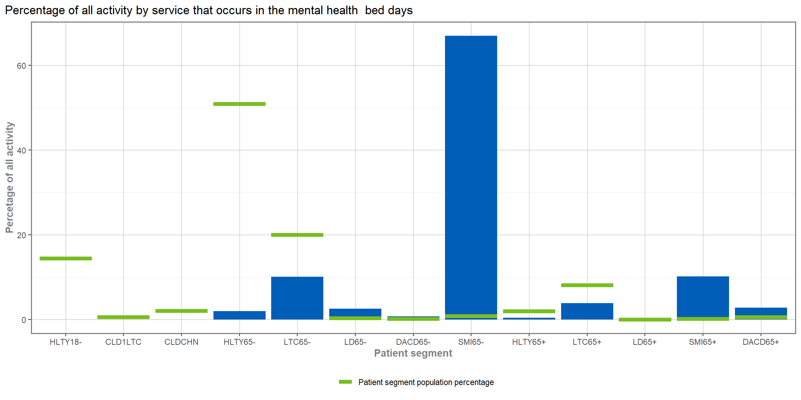
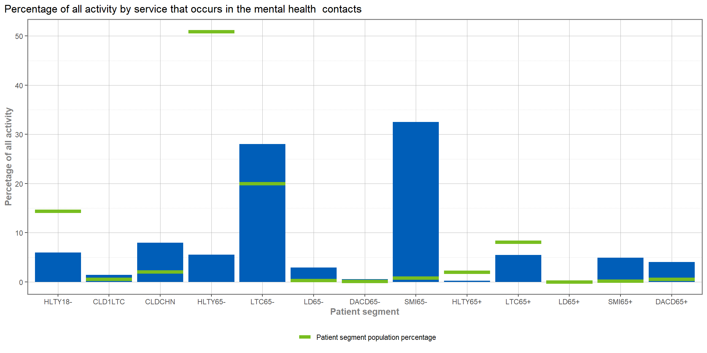
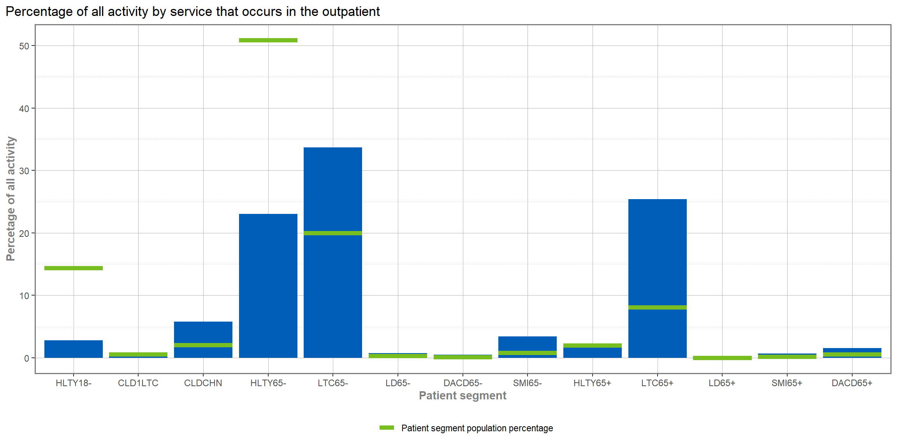
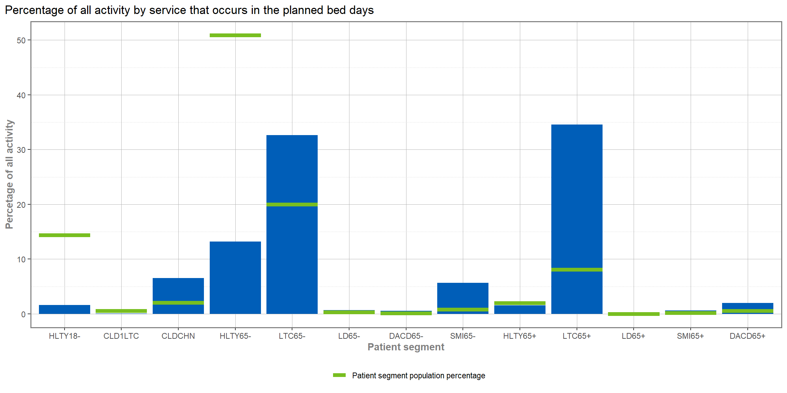
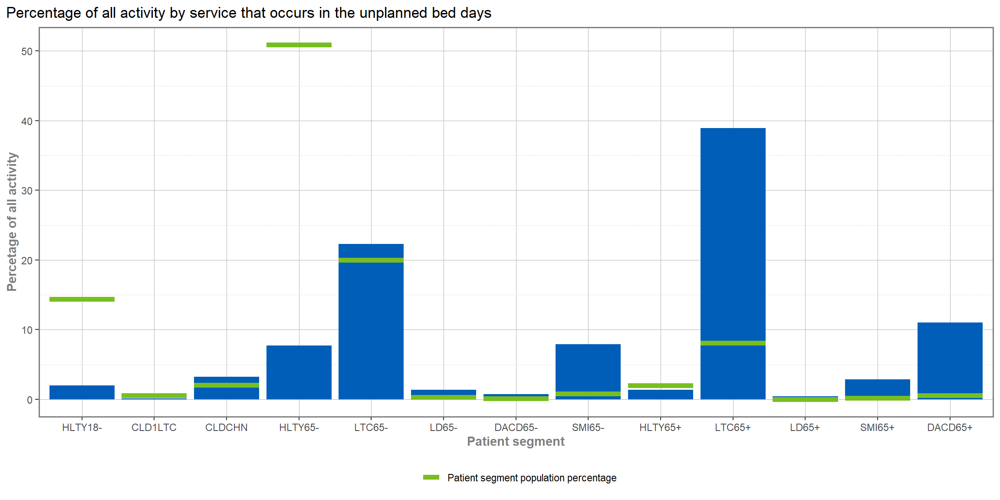
Look to the future
The graph below displays the five services that have has the greatest relative rate of increase in activity over the last t three years in NWL. The service that has seen the greatest increase in activity over the last five years is A&E attendances, followed by non-elective admissions and elective admissions.
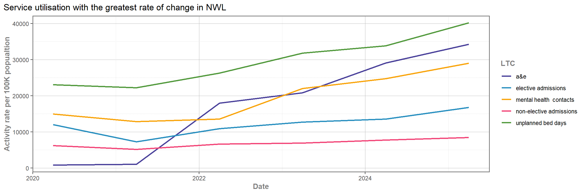
Activity compared to need
Increased activity is not necessarily a bad thing if it is meeting the need of the population, for example increased GP appointments in a a population that has higher rates of poor health. It is therefore important to investigate healthcare activity compared to healthcare need. The graph below investigates the rate of activity compared to the prevalence of multi-morbidity, which can be used as proxy indicator for general healthcare need. The top graph compares this ratio between deprivation groups and the bottom compared across ethnic groups.
Across the deprivation groups those in the most deprived groups receive more service activity per multi-morbid patient for A&E, GP appointments and unplanned bed days. It is notable that despite the increase the primary care activity per multi-morbid patient that activity per patient in A&E and unplanned bed days still reports some inequality. This may reflect the exacerbated need caused by living in a deprived area resulting in more trips to A&E and longer stays in hospital. However, it is worth noting that the difference in activity per patient in primary care is greater than the reactive care, suggesting the support given in primary care may reduce potentially inequalities in activity that could be seen in secondary reactive care.
Across deprivation groups, patients in the most deprived areas receive more service activity per multi-morbid patient in A&E, GP appointments, and unplanned bed days. Notably, while activity per multi-morbid patient increases in primary care for the more deprived groups, so does A&E use and unplanned bed days. This may reflect the greater health needs associated with living in deprived areas, leading to more A&E visits and longer hospital stays, or may suggest that more than increased primary care activity is needed to reduce secondary reactive care. However, the difference in activity per patient is greater in primary care than in reactive care, suggesting that enhanced primary care support may help reduce inequalities that would otherwise appear more strongly in secondary, reactive services.
Across ethnic groups, the picture is more complex. Both Asian and Black ethnicity report less GP appointments per multi-morbid patient compared to the NWL average, however the Black population then reports a higher A&E attendance per multi-morbid patient, than the average and the Asian population reports lower. The White population reporting the lowest activity per patient for A&E and the highest GP appointments per multimorbid patient. The trend for Asian and Black population is similar for unplanned bed days , however the White population now reports higher unplanned bed days per multi-morbid patient. Further analysis is need to understand what is driving the activity in each group.
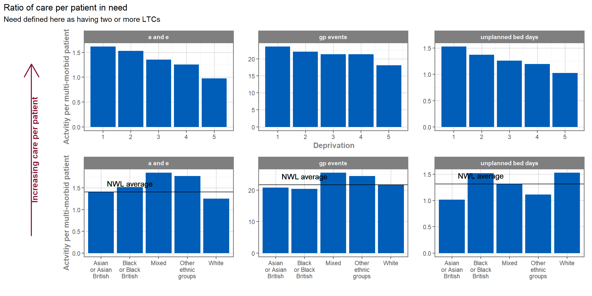
Health Outcomes
Long term conditons
Health outcomes help us understand where to prioritise resources by highlighting the areas and populations with the greatest need, ensuring interventions are targeted for maximum impact and equity.
Hypertension is the long term condition with the highest recorded prevalence in North West London, followed by diabetes and depression. For most conditions North West London has a lower recorded prevalence compared to the England average, this is most likely due to the younger population. However, NWL does have a higher prevalence of diabetes and severe mental illness compared to England. Focusing on the over 65s, the graph on the right reports that in North West London there is a higher recorded prevalence of hypertension, diabetes and CHD compared to England.
The graph below used data from the North West London linked data set WSIC, this allows us to analyse people with a recognized long term condition diagnosis in primary care with activity in secondary services. This means we can quantify the impact that the long term conditions have on the NHS services in North West London.
Here we look at the rate of unplanned bed days, which costs the NHS approximately £900 per day, UK Parliment for each long term condition group. The graph compares the rate of unplanned bed with the prevalence of disease, with the size and color of the bubbles representing the overall number of bed days. The bigger and closer to the colour the red the bubble is the greater the number of unplanned bed days
The graph shows that the long term conditions with a higher prevalence tend to have a lower rate of unplanned bed days. Therefore a disease like hypertension may ultimately cost the system the most unplanned activity and money as in the last year people with hypertension accounts for around 408,000 unplanned bed days. Whereas conditions such as dementia and heart failure have a higher associated cost per person and therefore is likely to feel like a greater burden to an individual.
Segmention Insights
To better address the needs of each population segment, it is important to understand which long-term conditions (LTCs) are most prevalent within each group. Some variation may be seen when comparing these findings with the NHS Population and Person Insight (PaPI) Dashboard. This is because the PaPI Dashboard does not use primary care data for condition diagnoses, whereas WSIC data is primarily based on primary care–derived QoF definitions.
The WSIC data highlights increased prevalence of anxiety and diabetes compared to the PaPI data but both agree on asthma being the most prevalent condition. Although children with complex needs actually have a lower prevalence of LTCs compared to the LTC segment, this segment also reporting cases of stroke, hypertension and SMI.
The 18-64 age groups have high rates of anxiety and depression, the highest rates are in the LTC65- and SMI65- group; the SMI group has higher rates of depression, whilst the LTC group has higher rates of anxiety. Obesity is also a common issue across all groups including the healthy population, the highest rates of obesity are reported in the LG65- and SMI65-.
In the over 65s, hypertension is the most prevalent condition across all groups, excluding the classifier LTC eg. SMI for SMI65+. Diabetes is then the second most prevalent condition in all segments apart from SMI65+ which has high rates of depression and anxiety.
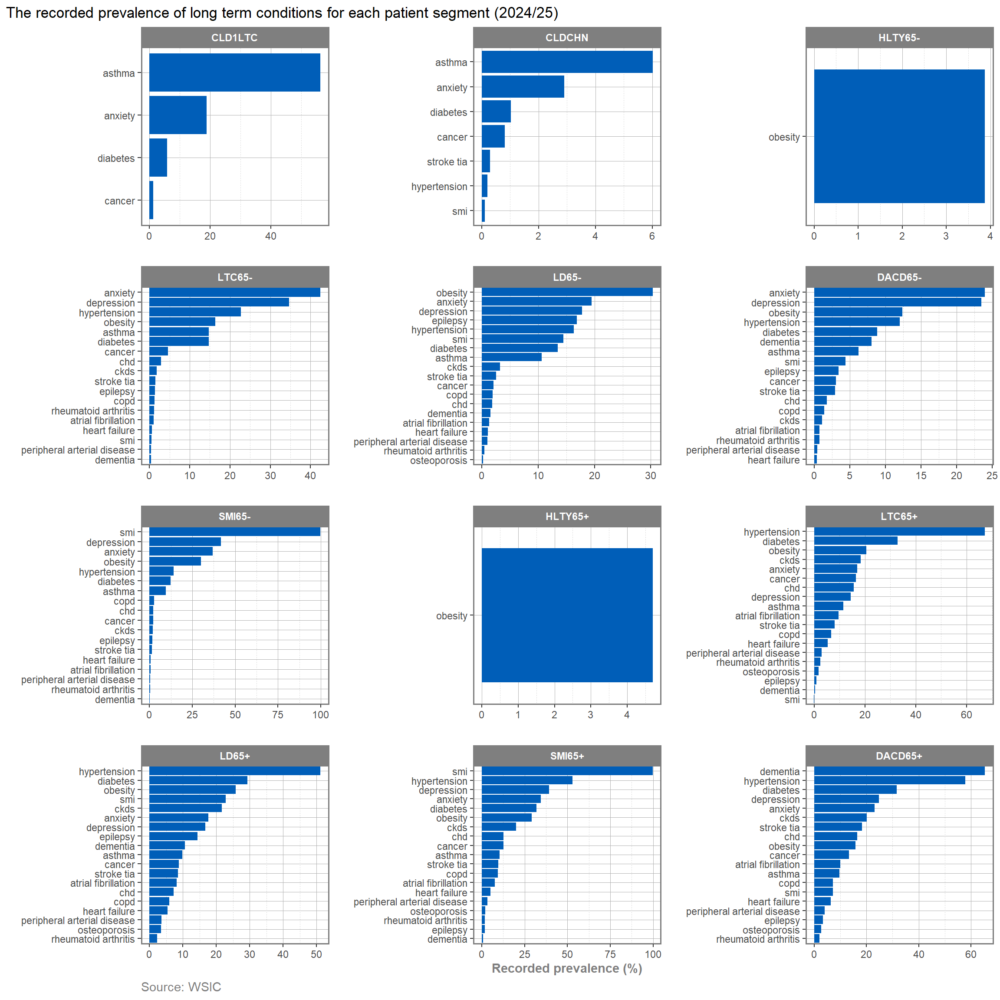
Disease prevalence varies across different ethnicity. Out of the conditions looked at the Black population has the highest recorded prevalence across the greatest number of conditions; including, stroke, SMI and obesity. The Asian population has high rates of diabetes and CHD, and the White population are more likely to suffer from COPD, cancer and anxiety.
Across nearly all conditions, with the exception of atrial fibrillation, cancer and osteoporosis, the more deprived populations have higher rates of disease. The Deprivation equity score for long term conditions graph reports the conditions that have the highest variation between deprivation groups; SMI, COPD and peripheral arterial disease.
Gender also reveals inequity in disease prevalence; the greatest relative difference is in rheumatoid arthritis, CHD and peripheral arterial disease and the greatest absolute difference between males and females is in anxiety, depression and obesity.
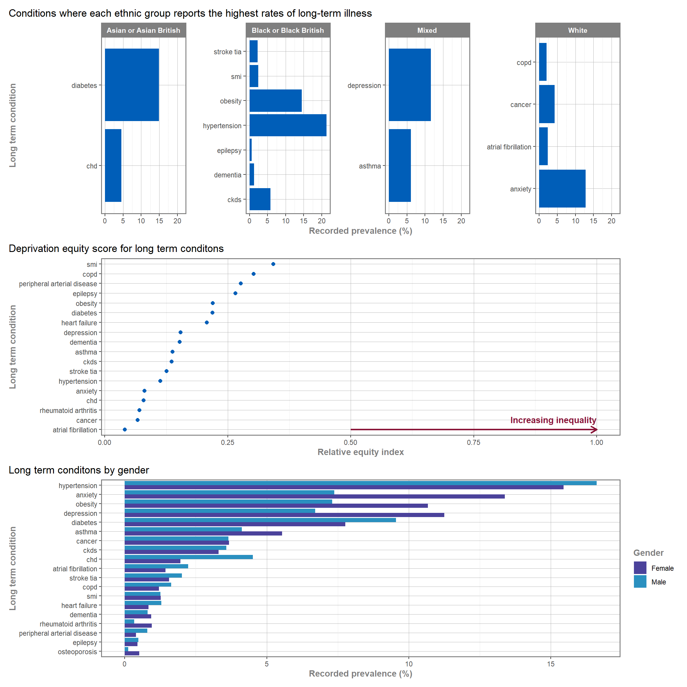
Taking recorded prevalence, impact on the person and system (represented by unplanned bed days) and inequality across deprivations groups into consideration the long term conditions in which should be considered a priority are hypertension, diabetes, obesity, COPD and heart failure.
| LTC | Recorded prevalence (%) (WSIC) | Unplanned bed days (per 100K population) | Deprivation inequalities score | Worse than England |
|---|---|---|---|---|
| Diabetes | 8.6 | 135,900 | 0.21 | Yes |
| Hypertension | 16.0 | 125,800 | 0.11 | No |
| Obesity | 8.9 | 78,200 | 0.22 | No |
| COPD | 1.4 | 309,300 | 0.30 | No |
| Heart failure | 1.0 | 545,700 | 0.21 | No |
Look to the future
The below graphs show the long term conditions that have increase in prevalence the most over the last 3 years. The graph on the left shows the absolute growth ie the conditions that have increased the most in terms of raw numbers. This graph shows that Obesity has increased the most, followed by anxiety, and depression suggesting the ICB should make plans for an increase of patients with these conditions.
The graph on the right highlights the conditions experiencing the greatest relative growth. While these conditions may not currently affect the largest number of patients, their rates of increase have been substantial. These include heart failure, dementia, obesity, chronic kidney disease (CKDs), and peripheral arterial disease. Recognizing these trends is crucial, as it allows us to anticipate future healthcare demands and strategically priorities resources to address emerging pressures before they escalate.
The Health Foundation has predicted an increase in the prevalence of all conditions that contribute the most to health inequality nationally, these include; CHD, stroke, COPD, heart failure, anxiety and depression, type 2 diabetes and chronic pain Health Foundation, 2024. Of these, chronic pain, type 2 diabetes and anxiety and depression will affect the most number of people nationally by 2040.
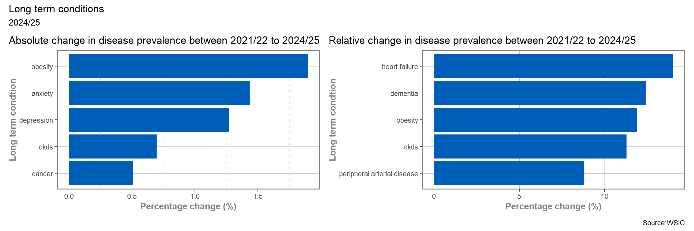
Areas of unmet need
North West London performs poorly compared to the national average in a number of health outcomes. This suggests there is unmet need for these patients in the progression on their health and care requirements. The outcomes here are compared to London due to the similar demographics, where possible. Equally, some metrics indicate failing of other services where residents are using emergency services instead. This highlights areas that would benefit from a integrated effort of moving care from hospitals to community.
The graph below, reports the areas of unmet need of North West London compared to England. This shows that the areas where NWL is particularly worse are people subject to the Mental Health Act, children with dental decay and children with asthma exacerbation.
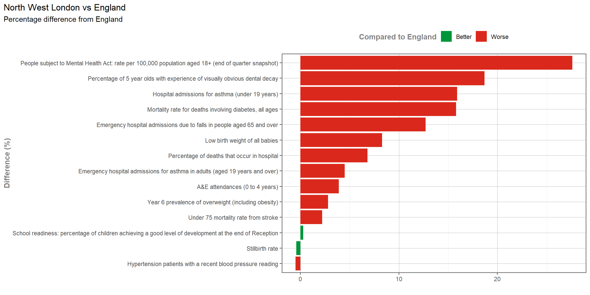
Maternity and babies
North West London has historically reported a higher still birth than England, however the rate has been decreasing over the last ten years, and is currently 4 per 1,000 births. Notably, the rate is lower that the London average suggesting NWL performs well compare to its peers. On the other hand, NWL has higher rates of low birth weight than both London and England.
Early access to maternity care allows health professionals to identify risks, provide timely interventions, and support healthy pregnancies. This helps prevent poor maternal and neonatal outcomes by ensuring mothers receive the right care, advice, and monitoring from the start. NWL has low rates of Early access to maternity care compared to England and other London ICBs OHID, 2023/24. Only 55% of women have had a maternity booking within 10 weeks of their pregnancy as of 2023/24.
Within these outcomes there are inequalities reported at the National level, with people in the most deprived groups and ethnic groups experiencing higher rates of maternal mortality Kings Fund, 2025.
Patient Insights
- Some women with SMI avoid maternity services due to fear of being judged or misunderstood.
- Women with LD often report poor adjustments during care and limited inclusion of their partners in maternity planning.
- Families of children with complex needs call for earlier mental health and emotional support during pregnancy and postnatal care.
- Some younger women in the healthy population, particularly under 30s, delay booking maternity care often due to low awareness or competing life pressures.
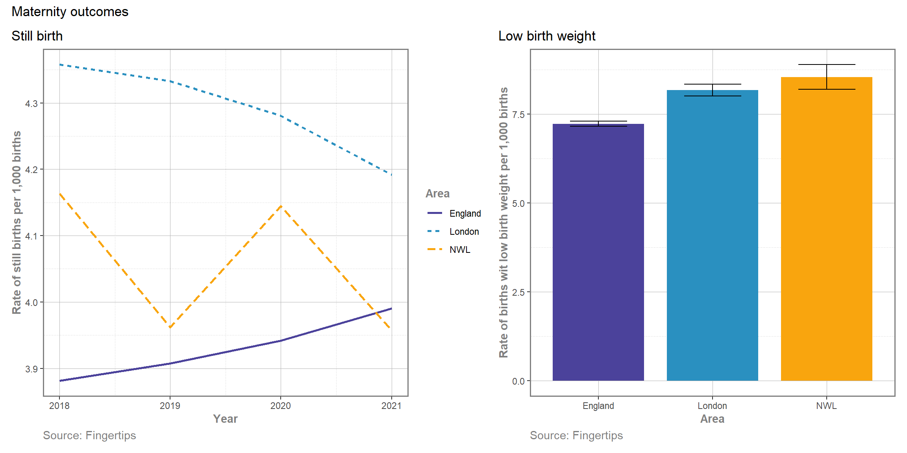
Children and Young People
There are a number of health outcomes that children in London experience, this includes higher rates of obesity, A&E attendances, dental decay and lower rates of school readiness.
Evidence shows that childhood obesity in England is strongly linked to inequality. Children living in the most deprived areas are more than twice as likely to be obese compared with those in the least deprived areas. For example, recent data shows obesity rates among Year 6 pupils are around 30% in the most deprived areas versus 13% in the least deprived. Children in year 6 from most ethnic groups (with the exception of white Irish, mixed white and Asian, and Chinese) are more likely to be living with obesity than white British children (20.5%). The pattern of obesity prevalence by deprivation decile varies by ethnic group. Most ethnic groups follow a similar pattern to England with a large gap in prevalence between the least and most deprived areas. However, this pattern is not evident in all groups - reception-aged children of black African and Bangladeshi ethnicity living in the least deprived areas have a similar prevalence of obesity to those in the most deprived areas of England. OHID, 2024
Dental caries in children was reported have the highest inequality in prevalence in the Shared Needs Assessment, 2024, with children in the Core 20 group over twice as likely to have a dental decay compared to children in the most affluent group. Black children were also reported to be 1.4 time more likely to have dental decay compared to the lowest reporting group (Asian children).
Healthy Children make up the majority of A&E admissions, however complex children have a much higher rate of A&E attendances.For both groups Males and children in more deprived areas have higher rates of attendance. variation among ethnicity is smaller but the Black children do have a slightly higher rate of attendance in both health and complex children.
School readiness actually good but communicationa nd launguage is poor
Patient Insights
- Children with complex needs in deprived areas often struggle without developed or accessible early years support.
- It appears that access to school readiness programmes for children with LD varies significantly across boroughs.
- Some in the healthy population underuse early-years services that support school readiness, often due to lack of awareness or eligibility confusion.
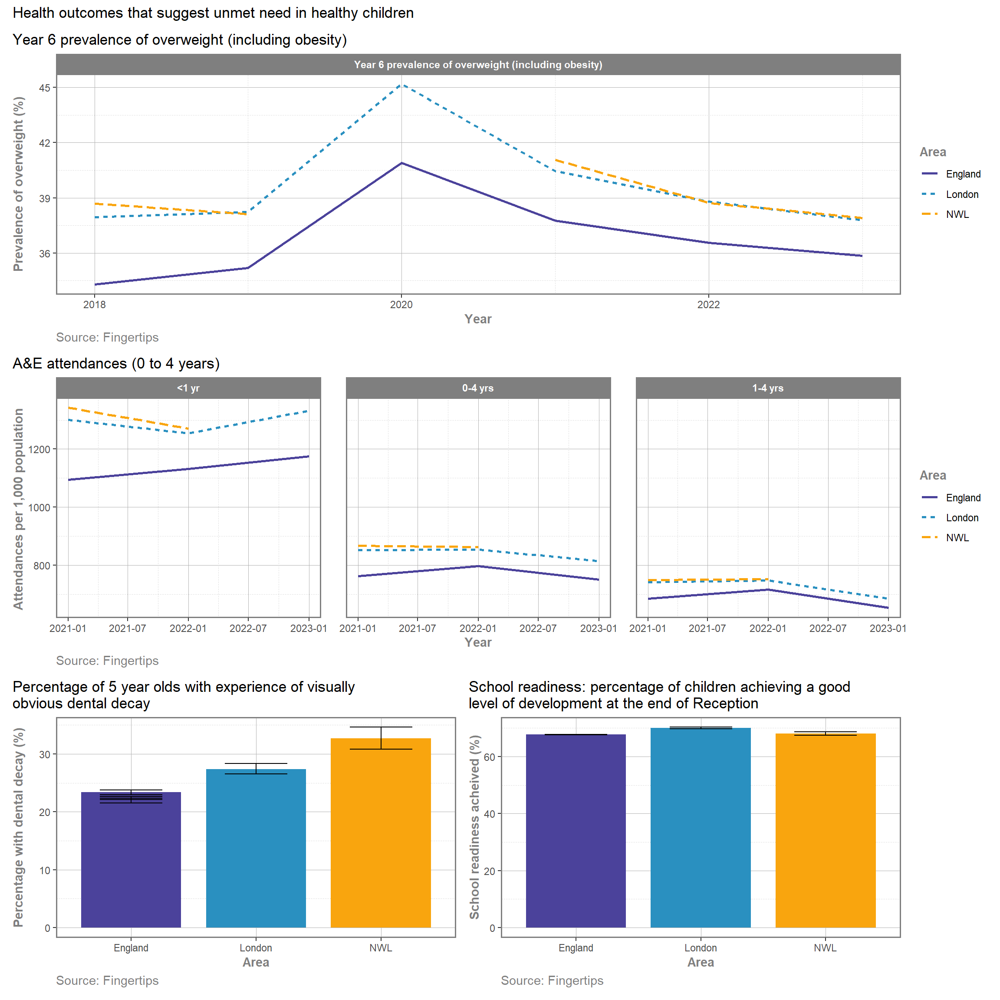
Managing the health of people with LTCs is key to keeping this population in stable state and to promote their wellbeing. LTC exacerbation such as admission to hospital is an indicator for a condition not being managed well. NWL has higher rates of asthma admissions than London and England for both children and adults, suggesting there is some unmet need in the care management of these patients.
Equaly, we can look directly at the care of LTCs such monitoring the blood pressure of people with hypertension. NWL falls just below the national average, we know that there is variation of who is likely to receive a blood pressure check with Males and younger people with less co-morbidity less likely to be monitored.
Ultimately, mortality is an indicator for unmet need, particular mortality of under 75s. In NWL, Males suffer from a higher rate of under 75 mortality due to stroke compared to England and London, Males are more likely to have a stroke. his bucks the trend for most other under 75 mortality in which NWL reports similar or better rates compared the national.
NWL also has a higher rate of deaths involving diabetes or hypertension, this can be partially explained by the high prevalence of these conditions in the over 65 population.
Patient Insights
- Some people with one LTC suggested that are unaware of their blood pressure targets or miss follow-up appointments.
- Among people with dementia, blood pressure monitoring often decreases after diagnosis.
- Some people with SMI receive limited blood pressure checks, partly due to mistrust or inconsistent healthcare interaction.
- Hypertension is rarely monitored in complex children unless linked to obesity or another flagged condition.
- Routine blood pressure checks are often missed for people with LD, especially where not actively flagged.
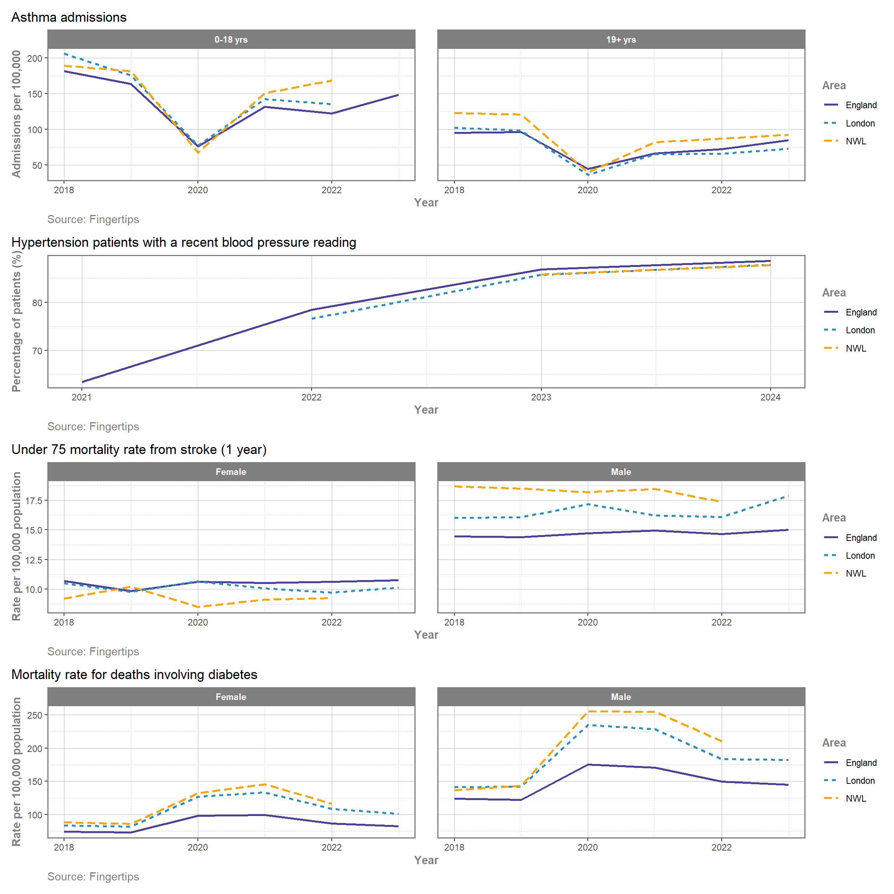
Care of an ageing population is an important issue, now and even more so in the future as the over 65 population increases. NWL has a high rate of falls. In NWL, being in the most deprived group increases the likelihood of having a fall, however, having a learning disability increases the risk the most (nearly 4 times) Shared Needs Assessment, 2024.
The percentage of deaths in hospital is a metric used to understand where people spend their final days of life. It reflects patterns in end-of-life care, patient choice, and the availability of community or palliative services, with lower hospital death rates often indicating better support for people to die in their preferred setting, such as at home or in hospice care. NWL and London have similar rates of deaths that occur in hospital which is significantly above England. In NWL the 75-84 age group is most likely to the die in hospital. For patients with dementia a lower percentage die in hospital in NWL than the average for NWL, however, compare to the nation value for dementia patients dying in hospital it is substantially greater, 39.5% in NWL and 26.3 nationally OHID, 2023
Patients under the mental health act is the most significant outline for NWL compared to national. Ethnicity is the greatest driver of inequality in this space with the Black ethnic group having the highest rates. Those in the most deprived groups, males and 18-34s are also groups with high rates.
Patient Insights
- Some people with SMI experience uncoordinated or disjointed care, with stigma still acting as a barrier to consistent mental health support.
- Some carers of people with dementia report feeling emotionally unsupported, especially when navigating the health and care system alone.
- Children with complex needs often face long waits for CAMHS, partly due to assessment delays and limited specialist capacity.
- Self-managing long-term conditions can cause emotional strain, especially when support feels inconsistent or reactive.
- Mild anxiety is common in the healthy population, but often goes unrecognized or untreated due to lack of perceived severity.
- Mental health needs in people with LD are often overlooked, partly due to communication challenges and diagnostic overshadowing.
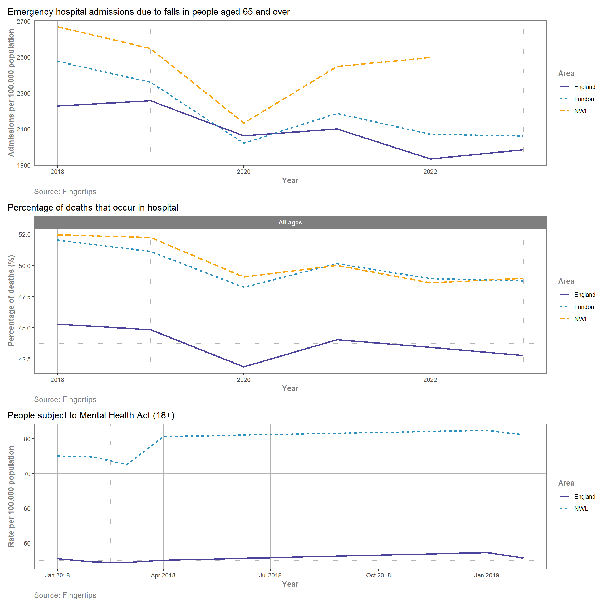
A method for health access issues, is to identify where people are using emergency services to access other services such as mental health. Equally, the repeated use, high intensity users (HIUs), of A&E suggests unmet need in care in other parts of the system.
In NWL, there are 500 referrals per 100,000 patients to mental health services through A&E. There is substantial variation with in the statistic, with more the deprived groups and Black, Mixed and White groups experiencing higher rates than the average. People with SMI also report high rates of referrals this way, suggesting a gap in care for these patients with known mental health issues. 18-64s with LD also reports high rates suggesting these patients may not receive the mental health support they need.
High intensity users, make up a small percentage of the population, but represent a group with high need. The most deprived quintile has nearly four times the rate of HIUs in its population compared the least deprived. Similarly, the Black, Mixed and Other ethnic groups have higher rates.
There are HIUs in all segments of NWL, those with SMI and LD have the highest rates.
Patient Insights
High Intensity Users
- Some people with dementia are frequently brought into services during crises (e.g. falls, infections, or carer burnout).
- Some in the healthy population make repeated service contact due to unmanaged anxiety or lack of early intervention.
- People with LTCs often feel that they are bounced between services due to poor coordination and unclear care pathways.
- For people with SMI, high admissions are linked to missed medication reviews or relapses.
- People with LD may repeatedly use 111 and A&E services when proactive care plans are missing.
- Children with complex needs often become high-intensity users due to their safeguarding concerns and a lack of joined-up care between services.
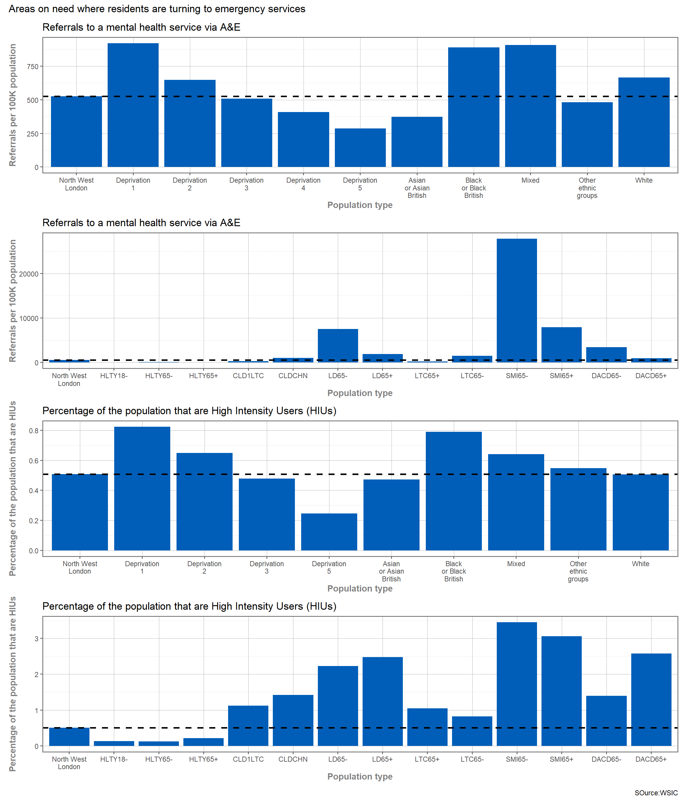
Patient Insights
The following table summarises key cross-cutting themes that emerge across population groups and topics, highlighting where experiences overlap and where improvements could have system-wide benefits.
| Cross-cutting theme | Description / examples | |||
|---|---|---|---|---|
| Missed or delayed prevention | Undiagnosed conditions (e.g. hypertension, cancer, COPD); post-diagnosis drop-off; low uptake of screening and checks, especially among LD, dementia, and healthy population. | |||
| Emotional and psychological burden | Emotional strain from self-managing LTCs or caregiving (e.g. dementia); untreated anxiety; lack of emotional support for carers. | |||
| Fragmented or uncoordinated care | Care gaps across services (e.g. LTCs, complex children, LD); crisis-driven use of services; lack of care plans; disjointed navigation. | |||
| Stigma, fear, and avoidance | Avoidance of services due to stigma (e.g. SMI, LD); mistrust in maternity or screening; healthy population feel excluded from targeted health offers. | |||
| Barriers to communication and navigation | Language barriers, unclear communication (e.g. complex families, LD); system navigation confusion; multiple contact points with unclear responsibilities. | |||
| Trust and relational care matter | Higher engagement when care is relational or peer-led (e.g. SMI, LD); trust built through known teams, personalised contact, and local delivery. |
These insights illustrate how residents particularly those in Core20Plus5 communities — experience the health and care system, often in ways that reflect missed opportunities, structural barriers, or fragmented support. Recurring issues such as care discontinuity, mistrust, emotional strain, and limited access to prevention point to areas where a more joined-up, person-centred approach could drive meaningful improvement.
Understanding Borough
Across the different boroughs there are differences in demographics and socio-economic factors that in turn affect health risk behaviours and health outcomes. Most of the variation between boroughs can be explained by the variation in demographics and socio-economic factors and therefore variation in health need. The graphs below, look at the difference in population segment breakdown compared to NWL, to understand how need varies across the boroughs.
The inner boroughs, Westminster, Kensington and Chelsea and Hammersmith and Fulham, tend to have a higher percentage of healthy population compared to NWL, whereas the outer borough, Ealing, Brent, Harrow and Hillingdon have a lower percentage of healthy people.
Outcomes may also be affected by variation in access to services, understanding the variation in behavior risk and outcomes can help to focus on where to improve service provision.
Westminster Insights Despite the higher rate of healthy population Westminster has higher rates of SMI, cancer and depression, compared to the NWL average. Westminster has the highest rates of SMI in NWL. More insights for Westminster and Kensington and Chelsea can be found in the borough JSNA.
Ealing Insights Ealing has a similar breakdown on population segments to NWL, however has a larger proportion on healthy children and childrenw with LTCs. Ealing has the highest rates of physical inactivity and alcohol abuse and CHD in NWL. More insights for Ealing can be found in the borough JSNA.
Brent Insights Hypertension and obesity are risk factors for developing diabetes and chronic kidney disease and we see a highest prevalence of all of these LTCs, excpet obesity, in Brent. There is a higher undiagnosed prevalence of hypertension in Black and Asian ethnic groups and in the most deprived areas (as shown by the HTN inequalities needs assessment) and this likely contributes to patterns of CKD and diabetes in Brent.
To tackle these inequalities and improve outcomes, our Brent Health Matters programme delivers outreach events, bespoke clinical and self-management support, information and signposting to a range of services. Community Champions are at the heart of the programme to provide culturally appropriate services, including services for diabetes and hypertension. Our primary care and INT programmes also have a focus on hypertension levels and inequalities. More insights for Brent can be found in the borough JSNA.
Kensington and Chelsea Insights K&C has a greater proportion of over 65s with LTCs compared to NWL but a smaller proportion over 18-64 with LTCS. There is also a higher proportions on SMI and depression compared to NWL. More insights for Westminster and Kensington and Chelsea can be found in the borough JSNA.
Hammersmith and Fulham Insights H&F reports the highest recorded prevalence of cancer, COPD and depression in NWL, although generally has a healthier population. More insights for Hammersmith and Fulham can be found in the borough JSNA.
Harrow Insights Harrow has high rates of LTCs mostly driven by older population, this is particularly refelected in the high rates of osteoporosis. More insights for Harow can be found in the borough JSNA.
Hounslow Insights The Hounslow population is similar to the NWL average, however, reports higher rates of diabetes, obesity, CHD and hypertension. More insights for Hounslow can be found in the borough JSNA.
Hillingdon Insights Hillingdon has higher rates of smoking and lower rates of blood pressure check and flu vaccination compared ot NWL.It also has the greatest number of LTCs that are significantly higher than the the NWL average, including anxiety, asthma, dementia, epilepsy and obesity. More insights for Hillingdon can be found in the borough JSNA.
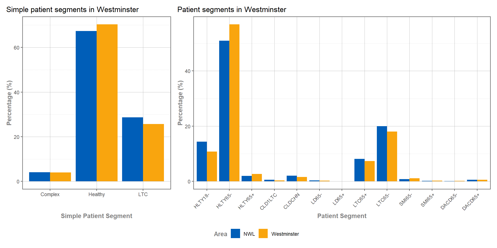
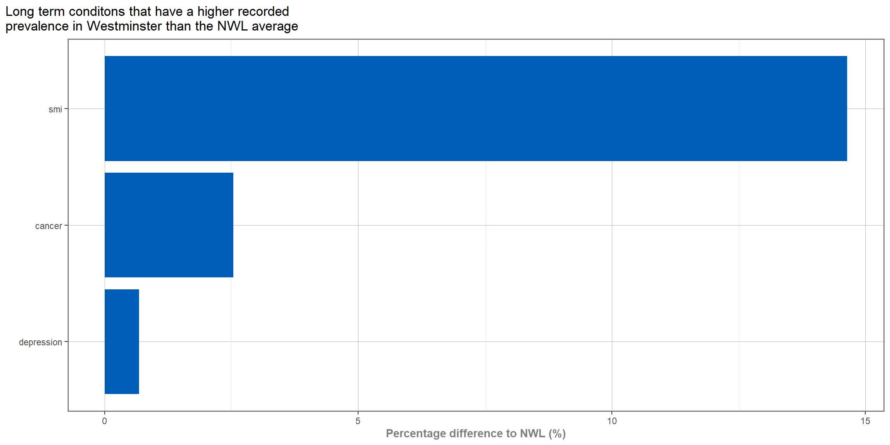
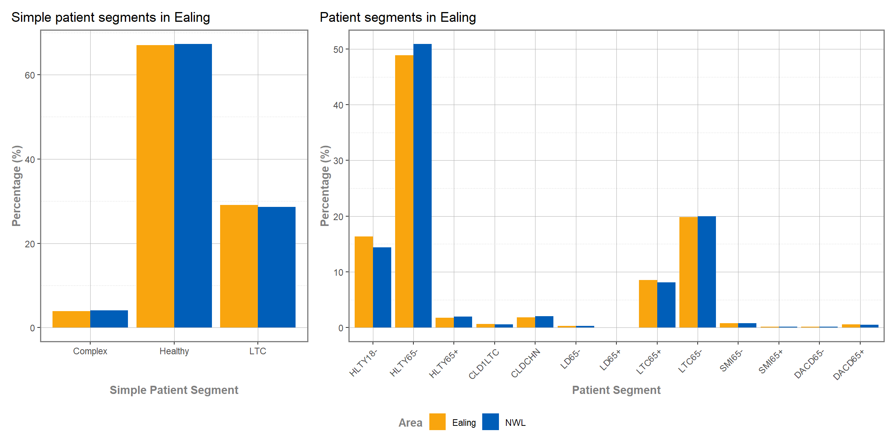
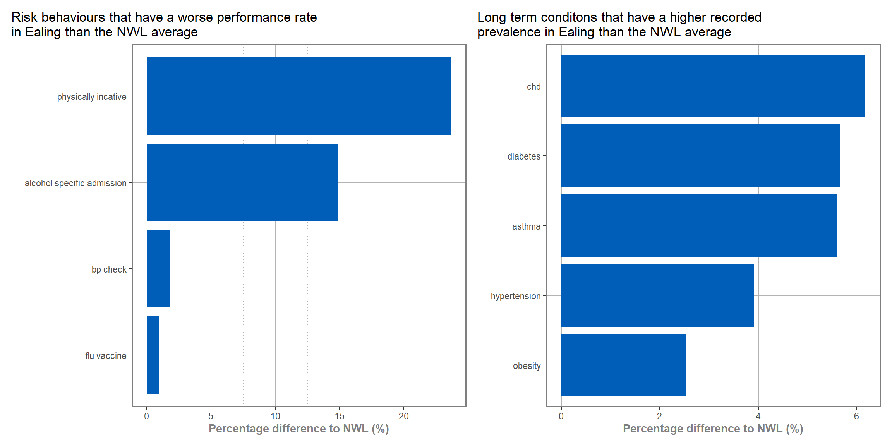
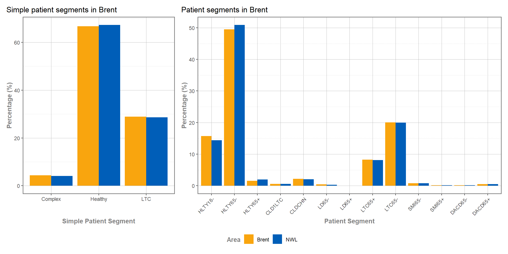
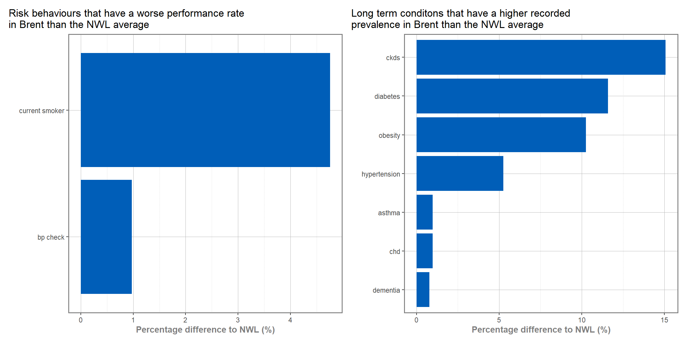
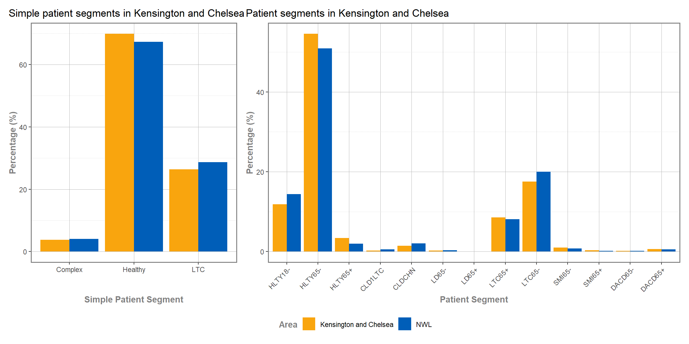
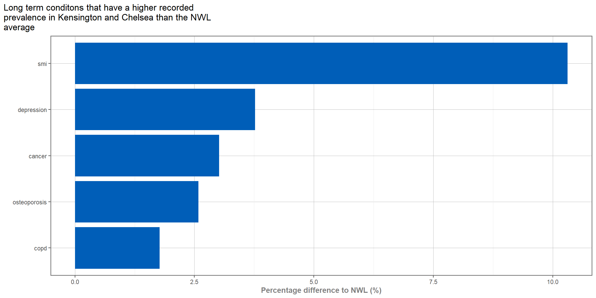
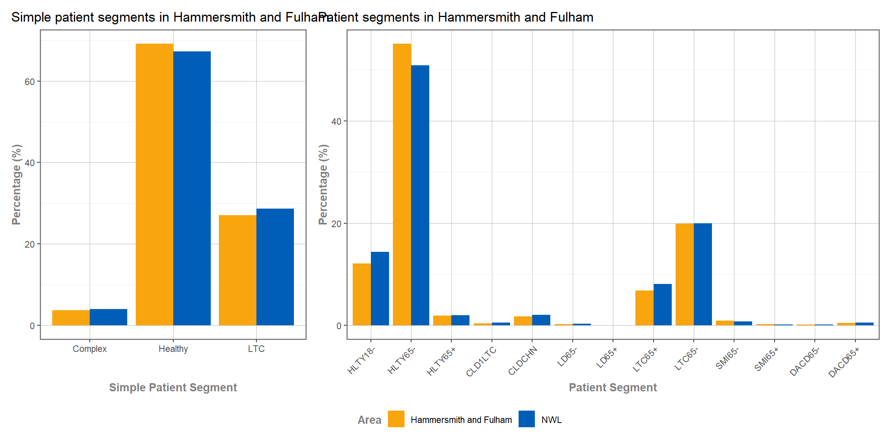
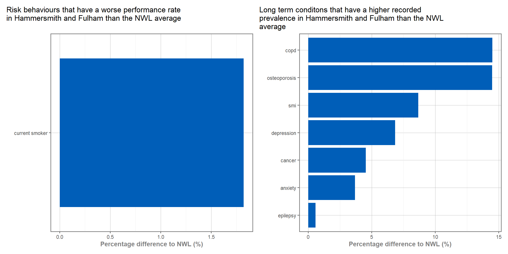
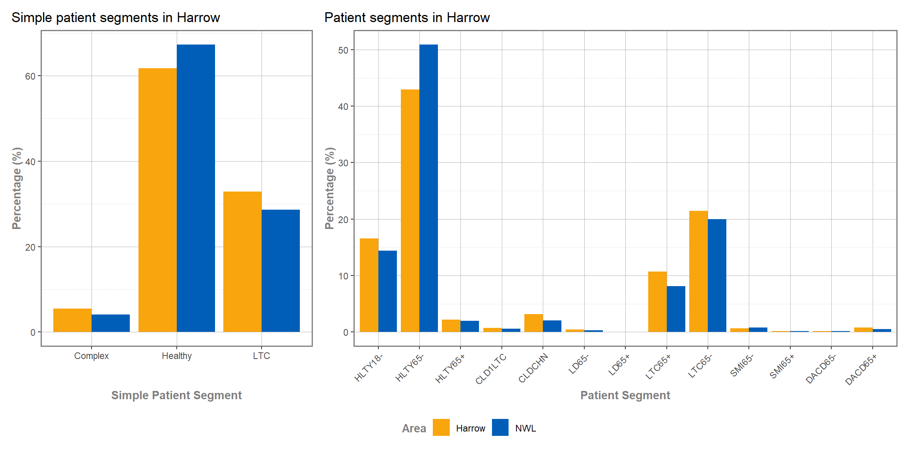
Conclusion
In North West London, there is a young and generally healthy population compared to England. However, there are populations that are less healthy compared to national average; Asian and Black ethnicity and over 65s. Equally, we have significant variation in the health status of our population with those in the more deprived communities having a shorted healthy life span. Addressing these inequalities requires an understanding of health outcomes, unmet needs, and the risk factors that shape them.
The table shows some of the key areas for improvement across the different population segments. These topics are the risk behaviours and outcomes that are significantly worse than England, have high prevalence in the segment or have a large degree of inequality.
Understanding the different areas of unmet need in each segment, allows the ICB to focus in on the biggest issues for each population, ultimately providing a better service and improving population health outcomes. In particular understanding and addressing the needs of the Healthy population enables the ICB to start focusing on moving from sickness to prevention, one of the main themes from the NHS 10-year plan.
| Healthy | LTCs | Complex | |
|---|---|---|---|
| Children |
Vaccination A&E attendances Mental health contacts Obesity Dental decay |
Obesity Asthma Anxiety Diabetes Asthma admissions |
Asthma Anxiety Diabetes |
| Adults |
STI testing Cancer screening Obesity Low birth weight |
Cancer screening Diabetes Majority of service demand Depression Anxiety Hypertension |
Smoking Alcohol use Cancer screening Obesity Depression Anxiety High intensity users Mental health detentions |
| Older Adults |
Vaccination Obesity |
Majority of service demand Hypertension Diabetes Obesity Stroke mortality Fall rate |
Physical inactivity Alcohol use Hypertension Diabetes Depression High intensity users Fall rate |
Cross-cutting areas of unmet need
Mental Health
North West London has increased need compared to England in a number of areas; most notably people with severe mental health conditions. NWL has nearly 30% more people being subject to the Mental Health Act per 100K population compared to England. North West London, has a similar prevalence of severe mental health (SMI) to England, therefore the substantial increase people being subject to the Mental Health Act suggests the support for these patients is lacking. The rate of Mental health detentions is higher in the Black population, Males and people aged 18-34, this highlights groups not getting the right care.
Mental health activity is higher in people with SMI, and significantly more in those with SMI aged 18-64 compared to those over 65, suggesting those over 65 may not be getting the mental health support they need or being treated in other parts of the system People with SMI currently put burden across all services with high rates of A&E attendances, outpatients and unplanned bed days. Many people with SMI are referred to Mental Health Service via A&E, rates are also higher in those aged 18-65, the Core 20 population and Black and Mixed ethnicity. Furthermore, Mental Health services are likely to see increased demand as anxiety and depression are the 2nd and 3rd LTCs with the highest absolute increase in prevalence. This trend can also be seen in the the rate of mental health contacts in the healthy children populations, which is higher than the healthy adult population. This suggests that the mental health support for children may be more accessible compared to adults but it might also suggest increased expectation and demand for these services as this population ages.
Patient insights also highlight that there is stigma around mental health which may lead to avoidance of service , ultimately leading to poorer outcomes in the long term.
Cardio Renal Metabolic Conditions
The LTCs that are have the biggest impact in NWL are Hypertension, Diabetes and Obesity, there are all conditions related to cardio renal metabolic pathway. Obesity is also considered a more upstream risk factor for diabetes and hypertension and all three LTCs are risk factors for more severe LTCs such as CHD and heart failure.
Diabetes is the only condition where they prevalence is higher that the national average for the whole population. In the over 65 group the difference between NWL and national diabetes prevalence increases and the NWL hypertension prevalence also exceeds the national average. Obesity prevalence has had the greatest absolute charges in prevalence and the 3rd highest relative change in prevalence over the last 3 years. Furthermore, the Obesity prevalence is likely underestimated by the QoF definition used in this report. Children in NWL are also affected with children in Year 6 having a higher prevalence of obesity compared to the national average. Higher rates of obesity are seen the in the most deprived populations and Black and Asian. This conditions is likely a considerable driving factor in the reduced percentage of healthy people in those populations.
Inequalities
Inequalities in disease prevalence, risk behaviors, and service use are largely preventable or modifiable, especially those driven by socioeconomic factors such as deprivation. The table below highlights areas of need showing the greatest variation by key distal risk factors. These inequalities should be considered throughout service design and commissioning, particularly when services impact these areas.
| Deprivation | Ethnicity | Gender (males) | Gender (females) |
|---|---|---|---|
| A&E attendances Mental health admissions SMI recorded prevalence Alcohol abuse COPD recorded prevalence |
A&E attendances Mental health admissions SMI recorded prevalence Alcohol abuse Diabetes recorded prevalence |
A&E attendances Alcohol abuse CHD recorded prevalence Peripheral arterial disease recorded prevalence Epilepsy |
Osteoporosis recorded prevalence Rheumatoid arthritis recorded prevalence Mental health contacts Anxiety recorded prevalence Depression recorded prevalence |
There is also evidence of inequality of care by how much we are spending on different ethnic and deprivation groups; there is a higher spend in the White, Black and more deprived populations, suggesting they experience more severe and costly health care
The analysis shows inequalities across most health outcomes, especially in service use. It also highlights that there common factors that being from a deprived or ethnic background that will contribute to all health outcomes. Survey evidence reveals that a substantial proportion of patients (especially ethnic minorities) report discrimination from NHS providers, leading to reduced engagement, avoidance of care, and mistrust—all linked to poorer health outcomes. Black, Asian, and other minority groups consistently report worse experiences at multiple points in the care pathway, such as feeling dismissed, facing language barriers, or lacking culturally appropriate services. NHS RHO, 2025. Equally, those in the most deprived populations face similar issues due to lock of trust with public institutions which can result from the fact the institutions are set up in a way that make it harder for these groups to access.Kings Fund, 2024
Insights from NWL patients detail issues around access to care including coordination of care, communication and trust can be addressed and should be considered in all parts of ICB planning.
Social, Economic and Environment (Wider determinants of health)
Wider determinants of health—such as income, education, housing, employment, environment, and social connections—play a major role in shaping life expectancy. While access to healthcare contributes to overall health, research shows that these broader social, economic, and environmental factors have a far greater impact on how long and how well people live. For instance, individuals living in deprived areas often face insecure employment, poor-quality housing, and limited access to healthy food or safe environments, all of which increase the risk of chronic illness and reduce life expectancy. Addressing and understanding these wider determinants is therefore essential to narrowing health inequalities and improving population health outcomes.
This section looks at the relationship between different determinants of health and life expectancy in females. Each of these determinants have a impact on life expectancy and general health Kings Fund, 2013, Health Foundation, 2025. It is also important to note that there may be substantial variation within boroughs, some data at a smaller geographic level is captured by the ONS census data. Equally, the impact of the the combination of several wider determinants of health is important to recognise and is captured and represented a small geographic level by the indices of multiple deprivation.
The below table outlines which wider determinants each borough performs more poorly than the England average.
Unemployment rate is defined as the proportion of the economically active population (aged 16+) who are without a job.
Unemployment is a significant issue in North West London. All boroughs, apart from H&F have higher unemployment rates than the England average. Hillingdon has the highest unemployment rate out of the NWL boroughs, whilst Kensington and Chelsea has the lowest employment rate (62.6%) and highest economic inactivity rate (other) (25.3%) nationally.
In NWL the leading drivers of unemployment due to sickness are Mental and behavioral disorders and MSK, futhermore, economic activity is increasing in the younger age groups (18-34) and decreasing in the 35-49 group.
Link between work and health
Unemployment or poor-quality work harms health; unemployment is associated with higher levels of stress, depression, anxiety, and poorer physical health outcomes (e.g., increased cardiovascular risk). Insecure or poor-quality work can also harm health through low pay, high stress, and unsafe conditions. (Bambra, 2019)
Health affects ability to work; chronic illness, disability, and poor mental health often reduce people’s ability to enter or remain in work. This can create a negative cycle. (DWP). In NWL, 3.5% of people are economically inactive due to long-term sickness or disability, however this is less that then England average (4.1%).
Early intervention helps break the cycle; Integrated approaches—such as social prescribing, vocational rehabilitation, and employment support embedded in health services—help people stay in or return to work, improving long-term outcomes.(DWP)
Low pay rate is defined as the proportion of employees earning below the real Living Wage as set by the Living Wage Foundation. In 2023–24, the real Living Wage was set at £13.15 in London and £12.00 in the rest of the UK.
Despite boroughs in London generally being higher earners than other parts of England, there is still an issue with low pay. In Harrow, nearly 30% of all employees earn below minimum wage, this is the fourth highest low pay rate nationally.
In NWL, around 30% of all children live in poverty, with Brent and Hounslow reporting higher child poverty rates than the national average, equally, in Westminster 40.3% of pupils receive free school meals.
Link between income and health
Financial stress & basic needs – Low pay limits access to essentials like nutritious food, safe housing, and heating, which are key to maintaining good health. This financial strain also contributes to chronic stress, which is linked to poor mental and physical health.
Work insecurity & poor conditions – Low-paid jobs are often insecure, involve shift work or unsafe environments, and provide little control or autonomy, all of which negatively affect wellbeing.
Mental health impact – People in low-paid roles report higher rates of anxiety, depression, and poorer overall life satisfaction compared to those on adequate incomes.(Marmot,2020)
Early life disadvantage – Children growing up in poverty are more likely to experience poor nutrition, inadequate housing, and limited access to safe spaces for play, which directly affect physical development and long‑term health.
Stress & mental health – Living in poverty exposes children to chronic stress, family financial strain, and, in some cases, adverse childhood experiences, all of which are linked to higher rates of anxiety, depression, and behavioural issues.
Long‑term health inequalities – Children in the most deprived areas are more likely to develop chronic illnesses earlier, experience worse health in adulthood, and have shorter life expectancy than their peers from wealthier families. (Marmot,2020) (PHE,2014).
Non-decent homes are defined as those with a Category 1 hazard – as assessed by the Housing Health and Safety Rating System (HHSRS) – that are not in a reasonable state of repair, lack reasonably modern facilities or are not warm enough (do not provide a reasonable degree of thermal comfort).
Six out of the eight boroughs are above the national average for non-decent socially rented homes and in small areas up to 39% of housing is overcrowded ONS census data. Furthermore, Westminster and Ealing boroughs have higher rates of people in temporary accommodation compared to the London average (17.2 householder per 1,000 population), these living conditions are associated in increased healthcare need. OHID (2023/24
Link between housing and health
Quality of housing – Poor‑quality homes (damp, cold, overcrowded, or unsafe) are linked to higher rates of respiratory illness, infections, injuries, and poor mental health.
Affordability & insecurity – High housing costs and insecure tenancies increase stress, financial strain, and instability, which are associated with anxiety, depression, and poorer overall wellbeing.
Overcrowding – Living in overcrowded conditions raises the risk of infectious diseases, disrupts sleep, and negatively impacts children’s educational attainment and emotional development.
Location & environment – Housing in areas with poor access to green space, healthy food, transport, and healthcare can compound health inequalities.
Homelessness & temporary accommodation – People experiencing homelessness or living in temporary housing face extremely poor health outcomes, with much lower life expectancy and higher rates of chronic illness. (Marmot,2020)
Active travel is defined as Walking, cycling, and public transport use encourage physical activity, reducing the risk of obesity, cardiovascular disease, and diabetes. In North West London, the inner boroughs tend to have a greater percentage of active travel compared to the outer boroughs.
Link between transport and health
Access to services & opportunities – Good transport links improve access to healthcare, education, employment, and social connections, which are vital for physical and mental wellbeing.
Air quality & road safety – High traffic volumes contribute to air pollution (linked to respiratory and cardiovascular disease) and increase the risk of road traffic injuries.
Cost & inequality – Limited or expensive transport disproportionately affects low‑income groups, restricting access to jobs, healthy food, and leisure activities, which worsens health inequalities.
Isolation & mental health – Poor transport connectivity increases social isolation, particularly for older adults and people with disabilities, contributing to loneliness and poorer mental health. (Marmot,2020).
In North West London, there are is generally a lower percentage of people with no qualifications the national average, however the trend differs for pupils missing school, suggesting a potential shift in educational attainment in the future. In Westminster over a quarter of the pupils miss 10% of the school classes. Across NWL, males, children with SEN support, children whose first language is English and children with free school meals (FSM) have higher rates of persistent absentees, with 25% children who are FSM eligible being persistent absentees.
Persistent absenteeism by ethnicity, varies across London boroughs, but generally absenteeism is higher in the White and Mixed ethnic groups compared to Asian and Black UK Gov, 2024/25.
Link between education and health Education and life chances – Higher educational attainment is strongly linked to better employment opportunities, higher income, and more stable housing — all of which support better health outcomes.
Health literacy – Education improves people’s ability to understand health information, navigate services, and make healthier lifestyle choices.
Mental wellbeing – Achieving qualifications boosts self‑esteem and life satisfaction, while low attainment is linked to poorer mental health and increased risk of unemployment.
Intergenerational effects – Parents’ education levels influence children’s health and development, perpetuating cycles of advantage or disadvantage
Missed learning & attainment – High levels of school absence are associated with lower educational achievement, which impacts long‑term health outcomes and employment opportunities.
Safeguarding & wellbeing – Persistent absence can be linked to safeguarding issues, family stress, or health problems, making it a marker for wider vulnerabilities.
Social development – Time away from school reduces opportunities for social interaction and support networks, affecting children’s emotional wellbeing and resilience.
Cycle of disadvantage – Children with frequent absences are more likely to leave education with fewer qualifications, perpetuating poorer health outcomes into adulthood.
Loneliness is the proportion of people who respond to the question ‘How often do you feel lonely?’ with ‘Often’ or ‘Always’ in hr Community Life Survey 2023/24.
In North West London, three of the boroughs have a higher proportion of people who often feel lonely, with Brent having the highest proportion out of all boroughs. Westminster has the lowest proportion of people who chat to their neighbors at least once per month nationally with only 51.5%
Link between community and health Social support and belonging – Strong community ties and cultural connections provide emotional support, reduce feelings of isolation, and promote mental wellbeing.
Identity and resilience – Cultural identity helps build self-esteem and resilience, contributing to positive mental health outcomes.
Health behaviours – Cultural norms influence health behaviours such as diet, exercise, and attitudes toward healthcare, shaping overall health outcomes.
Access to resources – Inclusive communities often facilitate better access to health information, services, and social activities that promote wellbeing.
Reducing inequalities – Supporting cultural diversity and community engagement helps address social exclusion and reduce health disparities.
Analysis of health inequalities by the Greater London Authority in 2022, reports on other aspects of the wider determinants of health including covering issues around food insecurity. It highlights in increasing code of food and the higher density of fast food outlets in more deprived areas. Futher information can also be found in Local authority dashboard from the Health Foundation.
Deprivation
The severity of many of the wider determinants of health—such as income, employment, education and housing — is effectively summarized by the Index of Multiple Deprivation (IMD). The IMD brings together data across several domains to create a single measure of relative deprivation, highlighting how disadvantage in one area often overlaps with others. This makes the IMD a crucial tool for understanding and addressing the root causes of health disparities.
The map below shows which geographic areas are in each deprivation decile (1-10), with 1 being the most deprived and 10 being the least deprived. This report also analyses the data by deprivation quintiles (1-5), with 1 representing the most deprived (deciles 1-2) or the Core20 group.
Demographics of the Core 20: When comparing patients living in the least deprived (IMD 10) and most deprived (IMD 1) areas of the NWL, those living in the least deprived areas are younger than those in most deprived areas. Analysis of ethnicity shows a much higher percentage of black patients in most deprived areas, and a lower percentage of Asian and White ethnicity.